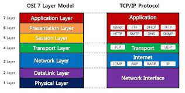
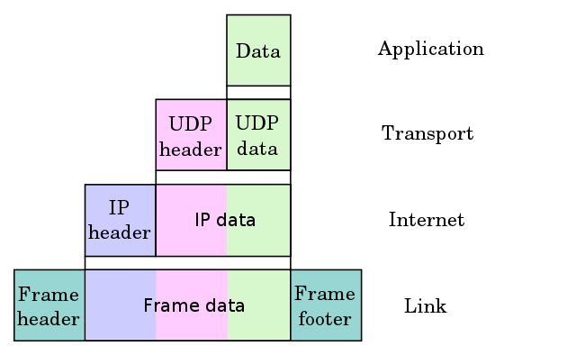
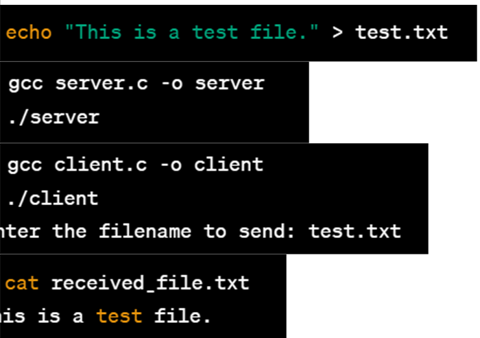

저는 개발에 대한 끊임없는 열정과 성장을 추구하는 홍수빈입니다. 현재는 단국대학교 소프트웨어학과에 재학 중인 5학년 학생입니다.
과거에는 개발에 대해 알지 못했던 때와는 달리, 지금은 개발의 매력에 푹 빠져있습니다. 학교에서 배운 이론을 온라인 저지 사이트에서 알고리즘 문제 해결에 적용하여 실력을 향상시키고 있습니다. 또한 작년부터는 팀 프로젝트를 시작으로 배운 내용을 GitHub에 기록하는 습관을 가지고 있습니다. 새로운 지식을 습득하는 것에 거부감이 없으며 항상 새로운 도전에 도전하려고 노력하고 있습니다.
제 학력으로는 2018년에서 2020년에는 수원고등학교를 졸업하였고, 2021년에는 단국대학교 소프트웨어학과로 3학년에 편입하였습니다. 그리고 2021년부터 2022년까지는 단국대학교 소프트웨어 3-4학년 학사과정을 이수하였고, 현재는 5학년에 재학 중입니다.
외부 활동으로는 LevelDB 캐시 분석 학부생 논문 작성에 참여한 경험이 있습니다. 이 스터디를 통해 key-value 데이터베이스의 동작 원리와 Redis와의 차이점, LSM-Tree 구조, LevelDB의 캐시 구조 등에 대해 학습하였습니다. 제 역할은 LevelDB 읽기 연산 시 캐시가 읽기 성능에 미치는 영향을 분석하고, LevelDB 내부 캐시 구조를 조사하며 성능 향상을 위한 실험을 진행한 후 이를 바탕으로 LevelDB 캐시에 대한 분석 내용을 논문으로 작성하였습니다.
또한, 프론트엔드와 백엔드 개발에 다양한 경험을 갖고 있습니다. HTML, CSS, JavaScript를 사용하여 웹 페이지를 구성할 수 있으며, React를 활용한 웹 개발 경험도 있습니다. 백엔드 개발 분야에서는 REST API와의 연동 경험, 객체지향 프로그래밍과 Spring Boot를 이용한 개발에 익숙합니다. MySQL과 JDBC, JPA를 활용하여 데이터베이스와의 연동을 할 수 있습니다. 또한, 소스코드 버전 관리와 협업을 위해 Git을 사용하며, GitHub를 통한 프로젝트 관리 경험도 있습니다. 리눅스 파일 관리 명령어를 숙지하고 있으며, 리눅스 소켓 프로그래밍 경험도 있습니다.
제 앞의로의 목표로는 스프링을 더욱 확실하게 배워서 스프링의 DI(Dependency Injection) 개념과 동작 원리를 완벽하게 이해하고, 이를 실제 프로젝트에 적용하는 것을 계획하고 있습니다. 스프링의 DI를 이해하면 객체 간의 결합도를 낮추고 유연하고 확장 가능한 코드를 작성하려 합니다. 또한, 스프링 프로젝트를 멀티 모듈 구조로 변환하는 작업을 진행하려고 합니다. 멀티 모듈은 프로젝트를 여러 개의 모듈로 분리하여 개발, 빌드, 배포하는 방식을 말합니다. 이를 통해 각 모듈의 독립성과 재사용성을 높일 수 있기 때문에 시도하려 하고 있습니다. 스프링에서는 Maven이나 Gradle과 같은 빌드 도구를 사용하여 멀티 모듈 프로젝트를 구성할 수 있기 때문에 멀티 모듈 구조를 적용함으로써 프로젝트의 유지보수성을 향상시키고 개발과 배포의 효율성을 높일 수 있을 것을 기대하고 있습니다.
제가 참여한 프로젝트 중 한 가지는 동아리 연합에 속한 동아리별 및 동아리 내부에 속한 부원들별 랭킹 시스템을 구축한 것입니다. 이 프로젝트에서는 React를 사용하여 전체 페이지의 UI를 개발하였고, Spring Boot를 사용하여 백엔드 일부를 개발했습니다. AWS의 RDS를 활용하여 관계형 데이터베이스를 구축하고, 프론트엔드와 백엔드의 REST API를 연동하였으며, AWS 클라우드 환경에서 서비스 운영 및 배포를 위해 작업하였습니다.
또한, 저는 Istio와 Kubernetes를 활용한 프로젝트 경험도 있습니다. 이를 통해 마이크로서비스 아키텍처를 구축하고 관리하는 방법을 익혔습니다. Istio를 사용하여 서비스 간의 통신과 트래픽 관리를 효율적으로 처리하였고, Kubernetes를 통해 컨테이너화된 애플리케이션들을 관리하고 배포하는 경험을 가지고 있습니다. 또한, Docker Compose를 이용하여 여러 컨테이너들을 관리하고 서로간의 네트워크 연결을 구성한 경험도 있습니다.
제 목표는 풀스택 개발자로서 다양한 분야에서 능력을 발휘하는 것입니다. 프론트엔드와 백엔드 개발 뿐만 아니라 시스템 아키텍처, 클라우드 환경 등 다양한 영역에 대한 지식과 경험을 쌓아 나가고 있습니다. 더불어 팀 프로젝트를 통해 협업과 의사소통 능력을 향상시키고, 문제 해결과 새로운 기술에 대한 탐구 정신을 갖추고 있습니다. 앞으로도 계속해서 더 나은 개발자로 성장하기 위해 노력하겠습니다.
______
2002-01-09 / 22살
경기도 수원 거주
2021 단국대학교 소프트웨어학과 편입
2023 단국대학교 소프트웨어학과 5학년 재학중
어린 나이의 이점을 살려 배울 수 있는것은 전부 배우려는 중!
홍수빈
나와의 채팅
프로필 관리
카카오 스토리
💻 My Tech Stack
C(C++)
using code test
html(css/js)
make front
java
studying...
React
studying... for capstone
Web Application Language
Programming Language
HTML
하이퍼 텍스트 마크업 언어(Hyper Text Markup Language, HTML) 웹 페이지 표시를 위해 개발된 지배적인 마크업 언어다. 또한, HTML은 제목, 단락, 목록 등과 같은 본문을 위한 구조적 의미를 나타내는 것뿐만 아니라 링크, 인용과 그 밖의 항목으로 구조적 문서를 만들 수 있는 방법을 제공한다. 그안의 꺾쇠 괄호에 둘러싸인 "태그"로 되어있는 HTML 요소 형태로 작성한다. HTML은 웹 브라우저와 같은 HTML 처리 장치의 행동에 영향을 주는 자바스크립트, 본문과 그 밖의 항목의 외관과 배치를 정의하는 CSS 같은 스크립트를 포함하거나 불러올 수 있다.
Programming Language
CSS
종속형 시트 또는 캐스케이딩 스타일 시트(Cascading Style Sheet)는 마크업 언어가 실제 표시되는 방법을 기술하는 스타일 언어(영어: Style sheet language 스타일 시트 랭귀지)로, HTML과 XHTML에 주로 쓰이며, XML에서도 사용할 수 있다. W3C의 표준이고, 레이아웃과 스타일을 정의할 때의 자유도가 높다. 마크업 언어(ex: HTML)가 웹사이트의 몸체를 담당한다면 CSS는 옷과 액세서리처럼 꾸미는 역할을 담당한다고 할 수 있다. 즉, HTML 구조는 그대로 두고 CSS 파일만 변경해도 전혀 다른 웹사이트처럼 꾸밀 수 있다.
Programming Language
JavaScript
자바스크립트(영어: JavaScript)는 객체 기반의 스크립트 프로그래밍 언어이다. 이 언어는 웹 브라우저 내에서 주로 사용되며, 다른 응용 프로그램의 내장 객체에도 접근할 수 있는 기능을 가지고 있다. 또한 Node.js와 같은 런타임 환경과 같이 서버 프로그래밍에도 사용되고 있다.
Programming Language
HTML5
HTML5는 HTML의 완전한 5번째 버전으로 월드 와이드 웹 (World Wide Web)의 핵심 마크업 언어이다. 2004년 7월 Web Hypertext Application Technology Working Group(WHATWG)에서 웹 애플리케이션 1.0이라는 이름으로 세부 명세 작업을 시작하였다.
HTML5는 HTML 4.01, XHTML 1.0, DOM 레벨 2 HTML에 대한 차기 표준 제안이다. 비디오, 오디오 등 다양한 부가기능과 최신 멀티미디어 콘텐츠를 액티브X 없이 브라우저에서 쉽게 볼 수 있게 하는 것을 목적으로 한다.
Programming Language
Ruby
루비(영어: Ruby)는 마츠모토 유키히로가 개발한 동적 객체 지향 스크립트 프로그래밍 언어이다. 루비는 순수 객체 지향 언어라, 정수나 문자열 등을 포함한 데이터 형식 등 모든 것이 객체이다.
기능에는 클래스 정의, 가비지 컬렉션, 강력한 정규 표현식 처리, 다중 스레드, 예외 처리, 반복, 클로저, Mixin, 연산자 오버로드 등이 있다. 구문은 ALGOL계를 계승하면서 가독성을 중시하고 있다.
개인 네트워크 개념 정리
Network
P2P
피어 투 피어 (peer to peer , peer - to - peer)는 다수의 단말간에 통신할때의 아키텍처의 하나로, 대등한 사람( Peer 피어 )이 서로 통신하는것을 특징하는 통신방식 통신모델 또는 통신 기술의 한 분야를 말한다.
인터넷 P2P 통신의 장점은 서버를 준비할 필요가 없고, 각 노드들이 트래픽과 자원을 할당해 부하를 분산시켜준다.
즉, 노드가 증가하더라도 서비스를 유지할 수 있는 높은 확장성을 갖고 있다.
단점에는 새로운 기능을 추가하거나 업데이트를 할 경우 관리가 어려운 점과
네트워크 전송 시간 때문에 노드간 정보 불일치, 성능 저하가 발생하기 쉬운 점이 있다.
Network
클라우드 컴퓨팅
클라우드 컴퓨팅의 개념은 1965년 미국의 컴퓨터 학자인 존 매카시가 "컴퓨팅 환경은 공공 시설을 쓰는 것과도 같을 것"이라는 개념을 제시한데에서 유래하였다. 1993년부터는 이미 클라우드라는 용어가 거대한 규모의 ATM을 지칭하는 데 쓰였다. General Magic라는 회사는 1995년 3월부터 AT&T와 다른 여러 통신사들과 제휴를 맺고 클라우드 컴퓨팅 서비스를 최초로 시작했다. 하지만 이 시기는 소비자 중심의 웹 기반이 형성되기 전의 일이었기 때문에 클라우드 컴퓨팅 사업은 당연히 실패했다. 그러나 10년이 지난 2005년에서야 클라우드 컴퓨팅이라는 단어가 널리 퍼지기 시작했다. 하지만 2005년 당시 클라우드 컴퓨팅의 대부분의 내용들은 SaaS에 집중되어 있었다. 2007년까지는 SaaS에 집중되어 있었지만 2008년부터는 더 이상 SaaS에만 집중되어 있지 않으며, IaaS, PaaS로 그 영역을 넓혀가게 되었다.
Network
IPC
프로세스 간 통신(Inter-Process Communication, IPC)이란 프로세스들 사이에 서로 데이터를 주고받는 행위 또는 그에 대한 방법이나 경로를 뜻한다.
IPC는 마이크로커널과 나노커널의 디자인 프로세스에 매우 중요하다: 마이크로커널은 커널이 제공하는 기능의 수를 줄여준다. 해당 기능들은 IPC를 통해 서버와 통신함으로써 얻으며 일반적인 모놀리딕 커널에 비해 IPC의 수가 극적으로 증가된다.

Network
OSI 7layers
OSI 모형(Open Systems Interconnection Reference Model)은 국제표준화기구(ISO)에서 개발한 모델로, 컴퓨터 네트워크 프로토콜 디자인과 통신을 계층으로 나누어 설명한 것이다. 일반적으로 OSI 7 계층이라고 한다.
각 계층은 응용 계층(7), 표현 계층(6), 세션 계층(5), 전송 계층(4), 네트워크 계층(3), 데이터 링크 계층(2), 물리 계층(1)으로 나뉜다. 또한 TCP/IP Protocol suite에서는 4계층으로 나뉘며,
응용 계층(4), 전송 계층(3), 인터넷, 네트워크 계층(2), 네트워크 액세스 계층(1)으로 구성되어 있다.

Network
Encapsulation
컴퓨터 네트워킹에서 캡슐화는 네트워크에서 논리적으로 분리 된 기능이 상위 수준 객체 내에 포함 또는 정보를 숨겨 기본 구조에서 추상화되는 모듈 식 통신 프로토콜을 설계하는 방법이다. 즉, 캡슐화는 "상위 계층에서 정보를 가져 와서 헤더를 추가하여 상위 계층 정보를 데이터로 처리한다". 캡슐화하는 동안 각 계층은 헤더와 선택적으로 트레일러를 추가하여 프로토콜 데이터 유닛(PDU)을 구축하며, 둘 다 위의 계층에서 PDU에 대한 제어 정보를 포함한다.
컴퓨터 네트워크 강의 정리
1~3장에 대한 내용 정리 txt가 소실되었음 따라서 4~8장 까지의 컴퓨터 네트워크 강의 정리가 담김
4장
<포트 포워딩과 라우팅>
포트 포워딩:
포트 포워딩은 네트워크에서 특정 포트로 들어오는 트래픽을 다른 포트 또는 다른 IP 주소의 포트로 전달하는 메커니즘입니다.
일반적으로 라우터 또는 방화벽에서 구성할 수 있습니다. 포트 포워딩은 네트워크에 있는 특정 서비스에 대한 외부 액세스를
가능하게 하기 위해 사용됩니다. 예를 들어, 웹 서버는 일반적으로 80번 포트를 사용하므로, 라우터의 포트 포워딩 설정을 통해
외부에서 해당 서버의 IP 주소와 포트로 접근할 수 있도록 설정할 수 있습니다.
라우팅:
라우팅은 패킷을 목적지까지 전달하기 위해 경로를 선택하는 과정입니다.
라우팅은 네트워크에서 패킷이 출발지에서 목적지로 이동하는 데 사용되는 경로 결정과
패킷 전달을 관리합니다. 라우팅은 네트워크 장치인 라우터가 수행하는 작업으로,
라우팅 테이블을 사용하여 패킷을 최적의 경로로 전달합니다. 라우팅은 목적지 IP 주소를
기반으로 경로 선택을 수행하며, 패킷이 네트워크를 통과하면서 다음 호프(Next Hop)로
전달됩니다.
데이터 평면(Data Plane):
데이터 평면은 네트워크 계층에서 패킷 전송과 관련된 작업을 처리하는 부분입니다.
데이터 평면은 라우터 또는 스위치와 같은 네트워크 장비에서 수행됩니다.
이곳에서 패킷이 받아들여지고, 패킷의 헤더 정보를 기반으로 패킷이 어디로 전달되어야
하는지 결정됩니다. 데이터 평면은 전달된 패킷을 라우팅 테이블과 같은 정보를 사용하여
다음 목적지로 전송하는 역할을 합니다. 데이터 평면은 패킷을 라우터의 입력 포트에서 출력
포트로 전달하는 기능을 수행하며, 이를 통해 패킷의 경로 선택 및 전송이 이루어집니다.
제어 평면(Control Plane):
제어 평면은 네트워크 계층에서 라우팅 테이블의 유지, 라우팅 프로토콜의 실행,
네트워크 상태 정보의 수집 등과 같은 네트워크 제어와 관련된 작업을 처리하는 부분입니다.
제어 평면은 네트워크의 전체적인 동작을 관리하고, 데이터 평면이 데이터를 전송하는데
필요한 경로와 규칙을 결정합니다. 라우팅 프로토콜인 OSPF, BGP 등은 제어 평면에서
사용되며, 이를 통해 네트워크 상태 정보가 교환되고 라우팅 테이블이 업데이트됩니다.
제어 평면은 네트워크의 구성, 라우팅 알고리즘, 경로 선택, 패킷 전달 등 네트워크의
동작을 결정하는 중요한 역할을 합니다.
라우터의 상위 계층은 라우팅 제어 평면(Routing Control Plane)으로,
이곳에는 라우팅 프로세서(Routing Processor)가 존재합니다. 라우팅 프로세서는
라우팅 테이블을 관리하고, 라우팅 프로토콜을 실행하며, 네트워크 상태 정보를 유지합니다.
이는 라우터의 논리적인 기능을 담당하는 부분입니다.
라우터의 하위 계층은 포워딩 데이터 평면(Forwarding Data Plane)으로,
이곳에는 고속 스위칭 패브릭(High-Speed Switching Fabric)이 존재합니다.
고속 스위칭 패브릭은 입력 포트(routing input ports)에서 받은 패킷을
출력 포트(routing output ports)로 전달하는 역할을 수행합니다.
이는 라우터의 물리적인 데이터 전달을 처리하는 부분입니다.
라우터에서 입력 포트와 출력 포트 사이에는 패킷 전달을 위한 내부 통로가 존재하며,
이 통로를 통해 입력 포트에서 들어온 패킷이 라우팅 프로세서로 전달되고,
그 후 스위칭 패브릭을 통해 출력 포트로 전달됩니다.
이러한 내부 통로는 전달 속도와 처리량을 최적화하기 위해 고속 스위칭 기술로 구성됩니다.
따라서 라우터 아키텍처는 입력 포트와 출력 포트로 구성된 데이터 평면과,
상위 계층에서 라우팅 제어를 담당하는 라우팅 프로세서로 구성된 제어 평면으로 나뉩니다.
이러한 구성은 라우터가 패킷을 효율적으로 전달하고 네트워크 상태를 관리할 수 있도록
도와줍니다.
1. 공유 버스 아키텍처의 문제점:
- 동시 전송의 어려움: 공유 버스를 통한 데이터 전송에서 동시에 여러 데이터그램을
전송하기 어려움.
- 버스 대역폭 한계: 버스 대역폭이 제한되어 데이터 전송 속도가 제한될 수 있음.
2. Banyan Networks와 교차바(crossbar) 등의 중간 연결망을 통한 스위칭:
- 데이터그램을 고정 길이 셀로 분할하고 연결망을 통해 셀을 스위칭하는 방식.
- 큰 규모의 네트워크에서 사용되며, Cisco 12000 시리즈의 장비는 60 Gbps의 스위칭
속도를 지원함.
요약하면, 공유 버스 아키텍처의 문제점인 동시 전송의 어려움과 버스 대역폭 한계를
극복하기 위해 Banyan Networks와 교차바 등의 중간 연결망을 사용하는 스위칭 방식이
도입되었습니다. 이를 통해 대형 네트워크에서 더 높은 전송 속도와 동시 전송이
가능해졌습니다.
1. 입력 포트 큐잉:
- 입력 포트의 합친 처리 속도보다 스위치 패브릭의 처리 속도가 느린 경우, 입력 큐에서
큐잉이 발생할 수 있음.
- 입력 버퍼 오버플로우로 인한 큐잉 지연과 패킷 손실이 발생할 수 있음.
- HOL(Head-of-the-Line) 차단: 큐에 있는 패킷 중 가장 앞에 있는 패킷이 다른 패킷들의
전송을 차단하는 현상이 발생할 수 있음.
2. 출력 포트 큐잉:
- 스위치를 통한 도착 속도가 출력 라인 속도를 초과하는 경우 출력 포트에서 버퍼링이 필요함.
- 출력 포트 버퍼 오버플로우로 인한 큐잉 지연과 패킷 손실이 발생할 수 있음.
요약하자면, 입력 포트 큐잉에서는 입력 버퍼 오버플로우로 인한 큐잉 지연과
패킷 손실이 발생할 수 있으며, HOL 차단 현상이 발생할 수 있습니다.
출력 포트 큐잉에서는 출력 포트 버퍼 오버플로우로 인한 큐잉 지연과 패킷 손실이
발생할 수 있습니다. 이러한 큐잉 현상은 전송 지연과 성능 저하를 초래할 수 있습니다.
1. 스케줄링 메커니즘:
- FIFO (선입선출) 스케줄링: 도착 순서에 따라 큐에 있는 패킷을 전송하는 방식.
- 실제 예시: 대기중인 사람들이 순서대로 비행기에 탑승하는 상황.
2. 폐기 정책:
- 큐가 가득 찬 상태에서 패킷이 도착하는 경우, 어떤 패킷을 폐기할지 결정하는 정책.
- 테일 드롭(Tail Drop): 도착한 패킷을 폐기하는 방식.
- 우선 순위(Priority): 우선순위에 따라 패킷을 폐기하는 방식.
- 무작위(Random): 무작위로 패킷을 폐기하는 방식.
3. 스케줄링 정책:
- 우선순위 스케줄링: 가장 높은 우선순위를 가진 패킷을 전송하는 방식.
- 다중 클래스: 서로 다른 우선순위를 가진 여러 클래스 존재.
- 실제 예시: IP 출발지/도착지, 포트 번호 등과 같은 헤더 정보에 따라 클래스를
지정하는 경우.
4. 라운드 로빈 (Round Robin) 스케줄링:
- 다중 클래스를 순환하면서 각 클래스의 큐에서 한 번에 하나의 패킷을 전송하는 방식.
- 실제 예시: 여러 개의 서비스 창구가 번갈아가며 고객을 처리하는 상황.
5. 가중 공정 대기 (Weighted Fair Queuing, WFQ):
- 일반화된 라운드 로빈 방식으로, 각 클래스가 주어진 가중치에 따라 공정한 양의 서비스를
받는 방식.
- 실제 예시: 여러 개의 응용 프로그램이 네트워크 대역폭을 가중치에 따라 공정하게 나누어
사용하는 상황.
요약하자면, 다양한 스케줄링 메커니즘과 정책이 존재하며, 이를 통해 패킷의 전송 순서와
폐기 정책을 결정할 수 있습니다. 실제 예시로는 비행기 탑승 순서, 서비스 창구 처리,
네트워크 대역폭 분배 등이 있습니다.
IP (Internet Protocol) 데이터그램은 인터넷 프로토콜에서 사용되는 패킷의 형식을
나타냅니다. IP 데이터그램은 네트워크에서 라우팅되고 전송되는 데이터의 단위입니다.
다음은 IP 데이터그램의 형식에 대한 간략한 설명입니다:
Version (4 bits): IP 프로토콜의 버전을 나타냅니다. 현재 사용되는 버전은
IPv4와 IPv6입니다.
Header Length (4 bits): IP 헤더의 길이를 32비트 워드 단위로 표시합니다.
이는 헤더의 시작부터 데이터 부분까지의 길이를 나타냅니다.
Type of Service (8 bits): 서비스 유형에 대한 정보를 제공합니다.
예를 들어, 우선순위, 품질 서비스, 트래픽 제어 등에 대한 힌트를 담을 수 있습니다.
Total Length (16 bits): IP 데이터그램의 전체 길이를 나타냅니다.
헤더와 데이터를 포함한 전체 길이를 바이트 단위로 표시합니다.
Identification (16 bits): 분할된 IP 데이터그램의 조각을 재조립할 때 식별하기 위한
값을 가지고 있습니다.
Flags (3 bits): IP 데이터그램의 분할 여부와 관련된 플래그 비트를 나타냅니다.
예를 들어, "MF(more fragments)" 비트는 더 많은 프래그먼트가 있는지 여부를 나타내고,
"DF(do not fragments)" 비트는 분할을 허용하는지 여부를 나타냅니다.
Fragment Offset (13 bits): 분할된 IP 데이터그램의 조각의 상대적인 위치를 나타냅니다.
Time to Live (TTL) (8 bits): IP 데이터그램의 수명을 나타냅니다.
이 값은 라우터를 통과할 때마다 감소하며, 0이 되면 데이터그램은 폐기됩니다.
Protocol (8 bits): IP 데이터그램에 포함된 상위 계층 프로토콜을 나타냅니다.
예를 들어, TCP인지 UDP인지 등을 나타냅니다.
Header Checksum (16 bits): IP 헤더의 오류 검사에 사용되는 체크섬 값을 포함합니다.
Source IP Address (32 bits): 출발지 IP 주소를 나타냅니다.
Destination IP Address (32 bits): 목적지 IP 주소를 나타냅니다.
Options (0-40 bits): 선택적인 확장 옵션 필드로, 추가적인 정보를 포함할 수 있습니다.
이 필드는 선택적으로 사용될 수 있으며, 크기는 최대 40비트입니다.
Data: IP 데이터그램의 실제 데이터를 포함합니다. 이는 상위 계층 프로토콜에 의해
해석되고 처리됩니다.
IP fragmentation은 전송할 데이터그램이 네트워크 링크의 최대 전송 단위
(MTU, Maximum Transmission Unit)보다 큰 경우, IP 계층에서 데이터를
작은 조각으로 분할하는 프로세스입니다. 이렇게 분할된 조각은 독립적으로 전송되며,
목적지에서 재조립되어 원래의 데이터그램을 복원합니다.
IP 데이터그램의 분할은 다음과 같은 단계로 이루어집니다:
분할 포인트 식별: 송신자는 원래 데이터그램의 크기와 네트워크 링크의 MTU를 비교하여
분할이 필요한지 확인합니다.
데이터 분할: 원래 데이터그램은 작은 조각으로 분할됩니다. 각 조각은 일련의 비트 필드를
사용하여 원래 데이터그램과 관련된 정보를 유지합니다. 이러한 정보에는 분할된 조각의 순서와 식별자, 원래 데이터그램의 길이 등이 포함됩니다.
전송: 분할된 IP 조각들은 독립적으로 전송됩니다. 각 조각은 개별적으로 목적지로 전송될
수 있습니다.
재조립: 목적지 호스트에서는 도착한 IP 조각들을 사용하여 원래의 데이터그램을
재조립합니다. 각 조각은 조각의 순서 및 식별자 정보를 사용하여 올바른 순서로
재조립됩니다.
IP 재조립은 수신자가 도착한 IP 조각들을 올바른 순서로 재배열하여 원래의
데이터그램을 복원하는 프로세스입니다. 이를 위해 수신자는 조각들의 순서 및
정보를 확인하여 올바른 재조립을 수행합니다. 모든 조각이 도착한 후에야 원래의 데이터그램이 완전히 재조립될 수 있습니다.
IP 재조립은 수신자에서 수행되므로 네트워크 상의 중간 라우터 등은 재조립을 수행
하지 않습니다. 또한, IP 분할 및 재조립은 네트워크의 혼잡도와 성능에 영향을 줄 수
있으므로 적절한 분할 정책과 조각 크기 선택이 중요합니다.
IP 주소는 호스트와 라우터 인터페이스를 식별하기 위한 32비트 식별자입니다. 각각
의 호스트나 라우터 인터페이스는 연결된 물리적 링크와의 연결을 나타내는 인터페이스
를 가지고 있습니다. 일반적으로 라우터는 여러 개의 인터페이스를 가지고 있으며,
일반적으로 하나 또는 두 개의 인터페이스를 가지고 있습니다 (예: 유선 이더넷,
802.11).
요약하면, IP 주소는 호스트와 라우터의 인터페이스를 식별하는 데 사용되며, 각 인터
페이스는 물리적인 링크에 연결됩니다.
<계층적 주소체계>
계층적 주소 체계는 우편 번호, 전화번호 및 IP 주소와 같은 여러 주소 체계에서 사용
되는 원리입니다. 각 계층은 특정 지리적 영역이나 식별자를 나타내며, 전체 주소는 계층적으로 구성됩니다.
우편 번호의 경우, 예를 들어 "12345"라는 우편 번호는 "12"가 특별시 또는 도를 나타내
고, "3"이 시, 군, 구를 나타내며, "45"가 동을 나타냅니다.
전화번호의 경우, "+81 - 32 - 8005 - 3224"라는 전화번호는 국가 번호인 "+81", 지역
번호인 "32", 로컬 번호인 "8005", 그리고 방 번호인 "3224"로 구성됩니다.
IP 주소는 네트워크 주소와 호스트 주소로 구성되며, IP 주소 등급은 ICANN (Internet
Corporation for Assigned Names and Numbers)에서 관리됩니다. IP 주소 등급에는 A,
B, C, D, E 등 다양한 클래스가 있습니다.
A 클래스: 네트워크 식별자가 첫 번째 옥텟에 위치하고, 나머지 세 개의 옥텟이 호스트
식별자에 할당됩니다. A 클래스는 대규모 네트워크에 할당됩니다.
B 클래스: 네트워크 식별자가 첫 번째 두 개의 옥텟에 위치하고, 나머지 두 개의 옥텟이 호
스트 식별자에 할당됩니다. B 클래스는 중간 규모의 네트워크에 할당됩니다.
C 클래스: 네트워크 식별자가 첫 번째 세 개의 옥텟에 위치하고, 마지막 한 개의 옥텟이 호
스트 식별자에 할당됩니다. C 클래스는 소규모 네트워크에 할당됩니다.
D 클래스: 멀티캐스트 그룹 통신에 사용됩니다.
E 클래스: 예약된 용도로 사용됩니다.
이러한 주소 체계는 주소 공간의 효율적 사용과 주소 할당의 관리를 지원하기 위해 계층적
구조로 설계되었습니다.
서브넷(Subnet)은 IP 주소의 일부를 사용하여 하나의 IP 주소 체계를 논리적으로 여러 개
의 네트워크로 분할하는 것을 말합니다. 서브넷은 동일한 서브넷 부분을 가진 장치 인터페
이스들이 서로 라우터 없이 직접 통신할 수 있는 네트워크입니다. 서브넷은 네트워크
용이하게 하기 위해 호스트 ID의 일부를 네트워크 ID로 활용하는 것입니다.
서브넷을 사용하는 이유는 하나의 IP 주소 체계를 여러 개의 논리적인 네트워크로 분할하
여 각 기관 또는 조직에서 독립적으로 관리할 수 있기 때문입니다. 네트워크 분할은
요구사항에 따라 결정되며, 서브넷 마스크를 사용하여 구체적으로 설정됩니다. 예를 들어,
255.255.255.0 서브넷 마스크는 24비트를 네트워크 ID로 사용하겠다는 의미입니다.
서브넷을 설정하기 위해 각 인터페이스를 호스트나 라우터로부터 분리하여 독립된 네트워
크로 만듭니다. 각각의 독립된 네트워크는 서브넷이라고 불리며, 서브넷은 서로 독립된
동작합니다.
요약하면, 서브넷은 IP 주소 체계를 논리적으로 여러 개의 네트워크로 분할하여 네트워크
관리를 용이하게 합니다. 서브넷은 동일한 서브넷 부분을 가진 장치 인터페이스들이 직접
수 있는 독립된 네트워크입니다.
CIDR (Classless Inter-Domain Routing)은 서브넷의 길이가 임의로 설정될 수 있는
주소 체계입니다. CIDR은 IP 주소의 형식을 a.b.c.d/x로 표현하며, 여기서 x는 서브
넷 부분의 비트 수를 나타냅니다.
CIDR의 필요성은 기존의 클래스 기반 IP 주소 체계인 A, B, C 클래스의 한계를 극복
하기 위해 등장했습니다. 예를 들어, A 클래스는 128개의 네트워크를 가질 수 있으며
(2^7), B 클래스는 16,000개의 네트워크를 가질 수 있습니다 (2^16). 그러나 C 클
래스는 많은 네트워크를 만들 수 있지만 호스트 수가 제한적입니다.
CIDR는 네트워크 주소를 유연하게 사용하여 보다 많은 호스트를 수용할 수 있는 슈
퍼네트워크를 구성할 수 있습니다. 특히 C 클래스의 경우 호스트 수가 제한적이므로
CIDR을 통해 여러 C 클래스 네트워크를 하나의 슈퍼네트워크로 통합하여 더 많은 호스
트를 수용할 수 있게 됩니다.
요약하면, CIDR은 주소 체계에서 서브넷 부분의 길이를 임의로 설정하여 네트워크 주
소를 유동적으로 사용할 수 있게 합니다. 이를 통해 더 많은 호스트를 수용할 수 있
는 슈퍼네트워크를 구성할 수 있습니다.
DHCP (Dynamic Host Configuration Protocol)는 호스트가 네트워크에 참여할 때 네트워크 서버로부터 IP 주소를 동적으로 할당받을 수 있게 해주는 프로토콜입니다. DHCP를 사용하면 호스트는 네트워크에 연결될 때 IP 주소를 자동으로 얻을 수 있으며, 사용 중인 주소의 임대 기간을 갱신할 수도 있습니다. 이를 통해 주소의 재사용이 가능하며, 호스트가 네트워크에 연결되어 있는 동안에만 IP 주소를 유지합니다.
DHCP는 이동 중인 사용자가 네트워크에 가입하고자 할 때도 지원합니다. 이를 통해 이동 중인 사용자는 새로운 네트워크에 쉽게 참여할 수 있습니다. 예를 들어, 이동 중인 노트북 사용자는 다른 장소에 가서 새로운 네트워크에 연결하려고 할 때 DHCP를 사용하여 자동으로 새로운 IP 주소를 할당받을 수 있습니다.
요약하면, DHCP는 호스트가 네트워크에 가입할 때 동적으로 IP 주소를 얻을 수 있도록 해주는 프로토콜입니다. 이를 통해 주소의 재사용이 가능하며, 이동 중인 사용자가 네트워크에 가입하고자 할 때도 지원합니다. DHCP는 유동성이 있는 사용자가 네트워크에 쉽게 참여할 수 있도록 도와줍니다.
-매우 흔한 상황은 아님(일반 가정에서 공유기-핸드폰,컴퓨터..를 예로들 수 있음)
-같은 네트워크에서 DHCP는 다음의 과정을 따름
DHCP Discover (요청):
클라이언트(active open port 68)가 네트워크에 연결되면, IP 주소를 할당받기 위해 DHCP Discover 메시지를 브로드캐스트(255.255.255.255)로 전송합니다. 이 메시지에는 클라이언트의 MAC 주소와 기타 네트워크 정보가 포함되어 있습니다.
DHCP Offer (응답):
DHCP 서버(passive open port 67)는 DHCP Discover 메시지를 수신하면 사용 가능한 IP 주소를 포함한 DHCP Offer 메시지를 브로드캐스트로 전송합니다. 이 메시지에는 서버의 IP 주소, 클라이언트에 할당될 IP 주소, 기타 네트워크 구성 정보가 포함되어 있습니다. 여러 개의 DHCP 서버가 있는 경우, 여러 개의 DHCP Offer 메시지가 전송될 수 있습니다.
DHCP Request (요청):
클라이언트는 DHCP Offer를 받으면, 해당 서버에 대한 요청을 보내기 위해 DHCP Request 메시지를 브로드캐스트로 전송합니다. 이 메시지에는 클라이언트가 선택한 DHCP 서버의 IP 주소와 할당받을 IP 주소가 포함되어 있습니다.
DHCP Acknowledgment (응답):
DHCP 서버는 DHCP Request 메시지를 수신하면, 클라이언트에 대한 DHCP Acknowledgment 메시지를 유니캐스트로 전송합니다. 이 메시지에는 클라이언트에게 할당된 IP 주소와 기타 네트워크 구성 정보가 포함되어 있습니다. 이후 클라이언트는 할당받은 IP 주소를 사용하여 네트워크 통신을 시작할 수 있습니다.
Ipv4의 가용 ip 주소가 급격하게 줄어듬 (지금 거의 고갈됨)
DHCP를 이용하여 ip 주소를 효율적으로 사용
컴퓨터의 Plug & play 사용이 가능
(고정 IP 주소를 설정할 필요가 없음)
컴퓨터가 자동적으로 설정해 준다
ISP(Internet Service Provider)가 IP 주소 블록을 어떻게 얻을까요?
A: ICANN (Internet Corporation for Assigned Names and Numbers)은 IP 주소를 할당하고 DNS를 관리하며 도메인 이름을 할당하고 분쟁을 조정합니다. ISP는 ICANN을 통해 IP 주소 블록을 얻을 수 있습니다.
ICANN는 주소 공간의 관리와 할당을 담당하여 인터넷에서 유일한 IP 주소를 확보하고 관리합니다. ISP는 ICANN에 IP 주소 요청을 제출하여 필요한 주소 블록을 할당받을 수 있습니다. 이를 통해 ISP는 고객에게 IP 주소를 제공하고 인터넷 연결을 제공할 수 있습니다.
요약하면, ISP는 ICANN을 통해 IP 주소 블록을 얻습니다. ICANN은 IP 주소의 할당과 관리를 담당하는 기관으로서 ISP는 이를 통해 필요한 IP 주소를 확보합니다.
NAT(Network Address Translation)은 가정 내에서 여러 대의 컴퓨터나 스마트폰 등에 개별적인 공인 IP 주소를 할당하는 대신, 인터넷 공유기 1대에만 공인 IP 주소 1개를 할당하는 방식입니다. 같은 공유기에 연결된 기기들은 가상(사설) IP 주소를 부여받으며, 외부에서는 하나의 공인 IP 주소를 공유하여 통신합니다. 사설 IP 주소는 내부 네트워크에서만 사용되며, 공인 IP 주소는 외부로 대표적으로 사용됩니다.
NAT의 동작 방식은 다음과 같습니다:
입력 라우터: 로컬 네트워크를 떠나는 모든 데이터그램은 동일한 하나의 NAT IP 주소(예: 138.76.29.7)를 가지고 있으며, 소스 포트 번호는 다르게 할당됩니다.
출력 라우터: 이 네트워크 내부로 들어오거나 나가는 데이터그램은 소스와 목적지 주소에 대해 보통과 같이 10.0.0/24 주소를 사용합니다.
이를 통해 여러 기기가 공유기를 통해 인터넷에 접속할 수 있으며, 외부로부터는 하나의 공인 IP 주소만을 알 수 있습니다.
요약하면, NAT(Network Address Translation)은 가정 내에서 공인 IP 주소를 공유기에 할당하고, 기기들에는 사설 IP 주소를 할당하여 인터넷 연결을 가능하게 합니다. 이를 통해 여러 기기가 하나의 IP 주소를 공유하면서 인터넷에 접속할 수 있습니다.
NAT(Network Address Translation)은 로컬 네트워크에서 인터넷에 연결하기 위해 사용되는 기술입니다. 일반적으로 가정이나 사무실에서 여러 기기(컴퓨터, 스마트폰 등)가 사용되는 경우, 각 기기에 고유한 공인 IP 주소를 할당하는 대신, NAT를 사용하여 하나의 공인 IP 주소를 공유합니다. 그러면 로컬 네트워크의 기기들은 가상 또는 사설 IP 주소를 사용하고, 외부에서는 하나의 공인 IP 주소만을 인식합니다.
NAT의 주요 동기는 두 가지입니다. 첫째, 주소 부족을 해결합니다. ISP(Internet Service Provider)로부터 할당받은 IP 주소는 제한적이며, 모든 기기에 고유한 IP 주소를 할당하는 것은 현실적으로 어려울 수 있습니다. 둘째, 로컬 네트워크의 기기 주소를 외부로 노출시키지 않고 변경할 수 있습니다. 이는 네트워크 보안 측면에서 이점을 제공합니다.
NAT는 어떻게 구현되는지 살펴보겠습니다. NAT 라우터는 출발하는 데이터그램의 출발지 IP 주소와 포트 번호를 (NAT IP 주소, 새로운 포트 번호)로 대체합니다. 이렇게 하면 원격 클라이언트나 서버는 응답할 때 (NAT IP 주소, 새로운 포트 번호)를 대상 주소로 사용합니다. 또한, NAT는 변환된 (출발지 IP 주소, 포트 번호)와 (NAT IP 주소, 새로운 포트 번호)의 변환 쌍을 NAT 변환 테이블에 기억합니다. 들어오는 데이터그램은 NAT IP 주소와 새로운 포트 번호를 해당하는 NAT 테이블의 (출발지 IP 주소, 포트 번호)로 대체합니다.
NAT은 16비트 포트 번호 필드를 사용하여 동시에 많은 연결을 처리할 수 있습니다. 하나의 LAN 측 주소로 최대 60,000개의 동시 연결을 처리할 수 있습니다.
NAT은 일부 논란이 있는 주제입니다. 일반적으로 라우터는 3계층까지만 처리해야 한다는 원칙을 따르지만, NAT는 4계층까지 처리하므로 이를 위반합니다. 또한, IP 주소 부족은 IPv6와 같은 해결책으로 처리되어야 할 문제입니다. NAT는 엔드 투 엔드 원칙을 어기는 것으로 여겨집니다. 따라서 애플리케이션 설계자들은 NAT의 가능성을 고려하여 애플리케이션을 설계해야 합니다.
NAT 트래버설(NAT traversal)은 NAT 뒤에 있는 서버에 접속해야 하는 클라이언트의 문제를 해결하기 위한 기술입니다. NAT 트래버설은 다양한 방법과 프로토콜을 사용하여 NAT를 통과하여 서버에 연결할 수 있도록 지원합니다.
Port Forwarding은 로컬 네트워크에서 특정 포트로 들어오는 연결 요청을 다른 내부 기기로 전달하는 기술입니다. 이를 통해 인터넷 상에서 외부에서 특정 포트로 접속하면 로컬 네트워크 내부의 특정 기기로 연결할 수 있습니다.
IPv6 등장의 이유:
IPv6가 등장한 가장 큰 이유는 IPv4의 주소 공간의 부족입니다. IPv4는 32비트로 표현되며 약 42억 개의 주소만 제공할 수 있습니다. 그러나 인터넷의 급속한 성장으로 인해 IPv4 주소 고갈 문제가 발생했습니다. 이를 해결하기 위해 IPv6가 개발되었습니다. IPv6는 128비트로 표현되며 약 3.4 x 10^38 개의 주소를 제공합니다.
IPv6에서 일어난 변화:
주소 공간: IPv6는 주소 공간이 매우 커져서 IPv4 주소 고갈 문제를 해결합니다.
헤더 포맷: IPv6는 헤더 포맷이 개선되었습니다. 옵션 필드가 헤더 외부로 이동되고 "Next Header" 필드로 표시됩니다. 이로써 헤더의 크기가 줄어들어 라우팅 및 패킷 처리 속도가 향상됩니다.
새로운 옵션: IPv6는 새로운 옵션들을 도입했습니다. 이를 통해 더 많은 기능과 유연성이 제공됩니다.
확장성: IPv6는 프로토콜의 확장성을 고려하여 설계되었습니다. 새로운 기술과 애플리케이션의 요구 사항에 대응할 수 있도록 확장이 용이합니다.
자원 할당 지원: IPv6는 자원 할당을 지원하기 위해 Traffic Class와 Flow Label과 같은 새로운 필드를 도입했습니다. 이를 통해 패킷의 핸들링과 특별한 기능을 지원할 수 있습니다.
=> 라우터에서 flow란 같은 성격의 packet들의 sequence를 뜻함
- 같은 path에서 전달됨
- 같은 자원들을 사용함
- 같은 종류의 보안을 가짐
=> 라우터는 flow lables의 핸들링을 돕는 flow label table을 가짐
=> 세가지 규칙이 정의됨
1. flow label은 source host(송신지)에 의한 패킷에만 할당됨
- label은 1 ~ 2^24 - 1 사이의 숫자임
- source는 flow가 존재하는 동안 new flow에 대하여 flow label을 재사용해서는 안됨
2. host가 flow label을 지원하지 않을경우 IPv6 base header의 flow label field를 0으로 설정 / router가 지원하지 않을 경우 단순히 그것을 무시함
3. 모든 패킷들은 같은 source, destination, priority, options을 가지는 같은 flow에 속해있음
보안: IPv6는 더 많은 보안 기능을 제공합니다. 암호화와 권한 옵션을 통해 패킷의 기밀성과 무결성을 보장합니다.
IPv6는 IPv4와 비교하여 주소 공간, 헤더 포맷, 옵션, 확장성, 자원 할당 지원, 보안 등 다양한 측면에서 개선된 프로토콜로 인식되고 있습니다. 이를 통해 인터넷은 더 많은 장치와 기능을 지원할 수 있게 되었습니다.
1. 체크섬(Checksum): IPv6에서는 체크섬을 완전히 제거하여 각 홉에서의 처리 시간을 줄였습니다. 이는 네트워크 라우팅과 전달 속도를 향상시키는 데 도움이 됩니다.
2. 옵션(Options): IPv6에서는 옵션 필드를 헤더의 외부로 이동시켰으며, "Next Header" 필드로 표시됩니다. 이로 인해 헤더의 크기가 줄어들어 라우팅 및 패킷 처리 속도가 향상되었습니다.
3. ICMPv6: IPv6에서는 ICMP의 새 버전인 ICMPv6가 도입되었습니다. 이에는 "Packet Too Big"과 같은 추가 메시지 유형 및 멀티캐스트 그룹 관리 기능이 포함되어 있습니다. ICMPv6은 네트워크 통신의 효율성과 신뢰성을 향상시키는 데 중요한 역할을 합니다.
IPv6는 IPv4와 비교하여 여러 가지 기술적인 개선을 가져왔으며, 주소 공간의 부족 문제와 보안, 효율성 등의 측면에서 더 발전된 인터넷 프로토콜로 인식됩니다.
IPv4에서 IPv6로의 전환(Transition)은 인터넷에서 많은 시스템을 IPv4에서 IPv6로 변환하는 것이므로 한 번에 일어나지 않고 시간이 걸리는 작업입니다. 이러한 전환은 원활하게 이루어져야 합니다.
IPv4에서 IPv6로의 전환을 위해 IETF(Internet Engineering Task Force)에서는 세 가지 전략을 개발하였습니다:
1. Dual Stack(이중 스택):
모든 호스트가 IPv4와 IPv6 버전을 모두 지원합니다. 즉, 호스트는 동시에 IPv4와 IPv6을 실행할 수 있어야 합니다. 호스트가 DNS(Domain Name System)에서 IP 주소를 요청할 때 어떤 주소 형식인지에 따라 프로토콜이 선택되는 방식입니다.
2. Tunneling(터널링):
IPv6 호스트가 IPv6 호스트에게 패킷을 전송해야 하는데, 중간에 IPv4 영역이 있는 경우 IPv6 패킷은 IPv4 패킷으로 캡슐화되어 IPv4 영역을 통과하고 다시 IPv6 패킷으로 해석되어 전달됩니다. 이때 IPv6 호스트는 호환 가능한 주소(Compatible Address)를 사용합니다.
3. Header Translation(헤더 변환):
IPv6을 사용하는 송신자가 IPv4에게 패킷을 전송해야 하는 상황에서 사용되는 전략입니다. 수신자가 IPv6을 이해하지 못하는 경우에도 대부분이 IPv6을 사용하므로 문제가 발생합니다. 터널링도 이 문제를 해결할 수 없습니다. 따라서 헤더 변환을 통해 전체적인 헤더 형식이 변환됩니다. 헤더 변환은 IPv4 영역 진입 전 라우터에서 수행됩니다. 이때 IPv6 호스트는 매핑된 주소(Mapped Address)를 사용합니다.
이러한 전환 전략들은 IPv4에서 IPv6로의 원활한 전환을 위해 고안된 방법들이며, 호스트와 네트워크의 지원과 호환성을 고려하여 선택되어야 합니다.
5장
<5장 개요>
Chapter 5은 네트워크 계층의 제어 평면(control plane)과 그 목표에 대해 다룹니다. 이에는 네트워크 제어의 원리를 이해하고 전통적인 라우팅 알고리즘, SDN 컨트롤러, 인터넷 제어 메시지 프로토콜(ICMP), 그리고 네트워크 관리를 포함합니다. 또한 OSPF, BGP, OpenFlow, ODL 및 ONOS 컨트롤러, ICMP, SNMP 등과 같은 인터넷에서의 구현과 실행에 대해 다룹니다.
<네트워크 계층 함수들>
네트워크 계층의 두 가지 주요 기능은 포워딩(forwarding)과 라우팅(routing)입니다.
포워딩: 라우터의 입력으로 들어온 패킷을 적절한 라우터 출력으로 이동시키는 기능입니다. 포워딩은 데이터 평면(data plane)에 해당하며, 라우터는 패킷의 목적지 주소를 확인하여 어떤 인터페이스로 전송해야 하는지 결정합니다.
라우팅: 소스에서 목적지까지 패킷이 전달되는 경로를 결정하는 기능입니다. 라우팅은 제어 평면(control plane)에 해당하며, 라우터는 라우팅 알고리즘을 사용하여 최적의 경로를 계산하고 라우팅 테이블을 구성합니다.
네트워크 제어 평면을 구성하는 두 가지 접근 방식이 있습니다:
라우터 단위 제어 (전통적인 방식): 이 방식은 각 라우터가 독립적으로 제어 결정을 수행하는 방식입니다. 각 라우터는 인접한 라우터와의 통신을 통해 경로 정보를 교환하고 자체적으로 라우팅 결정을 내리는 방식입니다.
논리적 중앙 집중식 제어 (SDN, 소프트웨어 정의 네트워킹): 이 방식은 네트워크의 제어를 중앙 집중화된 컨트롤러에서 수행하는 방식입니다. 소프트웨어 정의 네트워킹(SDN)에서는 네트워크의 전체 상태를 파악하고 중앙 집중식 컨트롤러가 라우팅 결정을 수행하며, 라우터는 컨트롤러의 지시에 따라 패킷을 전달합니다.
요약하면, 포워딩은 패킷을 라우터에서 입력에서 적절한 출력으로 이동시키는 기능이고, 라우팅은 소스에서 목적지까지의 경로를 결정하는 기능입니다. 네트워크 제어 평면은 라우터 단위 제어와 논리적 중앙 집중식 제어 두 가지 방식으로 구성됩니다.
<라우팅>
라우팅(Routing)은 네트워크에서 패킷이 출발지로부터 목적지로 전달되는 경로를 결정하는 과정입니다. 라우터는 라우팅 테이블을 사용하여 수신한 패킷을 적절한 출력 링크로 전달합니다.
라우터는 라우팅 테이블을 만들기 위해 여러 가지 정보를 사용합니다. 이 정보에는 네트워크 토폴로지(네트워크의 구성), 링크의 상태, 경로 비용, 트래픽 부하 등이 포함될 수 있습니다. 라우터는 이러한 정보를 기반으로 최적의 경로를 결정하고 라우팅 테이블에 저장합니다.
<라우터의 기존 방식, 최근 방식>
Per-router control plane (기존 방식)은 각 라우터의 라우팅 알고리즘 구성 요소들이 서로 상호작용하여 포워딩 테이블을 계산하는 방식입니다. 각 라우터는 자체적으로 라우팅 알고리즘을 실행하고 포워딩 테이블을 계산합니다. 이는 분산된 방식으로 각 라우터가 독립적으로 제어를 수행하는 형태입니다.
Logically centralized control plane (최근)은 통상적으로 원격지에 위치한 별도의 컨트롤러가 로컬 제어 에이전트(Control Agent, CA)들과 상호작용하여 포워딩 테이블을 계산하는 방식입니다. 이 컨트롤러는 여러 라우터의 제어를 중앙에서 관리하고 포워딩 테이블을 계산하는 역할을 합니다. 로컬 제어 에이전트는 컨트롤러와 통신하여 네트워크의 전체적인 제어와 포워딩 테이블 계산에 참여합니다.
기존 방식인 Per-router control plane은 각 라우터가 독립적으로 제어를 수행하기 때문에 관리와 구성이 분산되어 있습니다. 반면 최근의 Logically centralized control plane은 컨트롤러를 중심으로 제어가 집중화되어 있으며, 네트워크의 전체적인 관리와 제어를 용이하게 합니다.
이러한 두 가지 방식은 네트워크 제어 평면을 어떻게 구성하고 라우팅 테이블을 계산하는지에 차이가 있습니다. Logically centralized control plane은 최근의 네트워크 관리 및 제어 기술인 소프트웨어 정의 네트워킹(Software Defined Networking, SDN)의 핵심 개념 중 하나로 사용되고 있습니다.
(in Control plane)
라우팅 프로토콜의 목표는 송신 호스트로부터 수신 호스트까지의 "좋은" 경로(즉, 라우트)를 결정하는 것입니다. 이 경로는 여러 라우터를 통해 패킷이 이동하는 순서로 구성됩니다. "좋은" 경로는 "비용이 가장 적은", "가장 빠른", "혼잡이 가장 적은" 경로 등을 의미합니다. 라우팅은 네트워킹에서 가장 중요한 도전 과제 중 하나입니다.
<정적, 동적 라우팅>
정적 라우팅(Static routing)은 경로가 관리자에 의해 변경되는 방식으로, 변경 속도가 느립니다. 복잡한 소프트웨어 구현이 필요하지 않으며, 소규모이거나 거의 변화가 없는 네트워크 환경에서 적합합니다. 또한 라우팅 트래픽으로 인한 대역폭 소모가 없습니다. 하지만 인터넷에서는 정적 라우팅을 사용할 수 없는데, 그 이유는 인터넷은 네트워크가 동적으로 변화하고, 수많은 라우터와 경로가 존재하기 때문입니다.
동적 라우팅(Dynamic routing)은 경로가 더 빠르게 변경됩니다. 링크 비용의 변화에 따라 주기적으로 업데이트되며, 초기에는 관리자가 라우터 테이블을 초기화합니다. 대부분의 프로토콜은 동적 라우팅을 지원하고 있습니다. 동적 라우팅은 네트워크의 변화에 빠르게 대응할 수 있어 더 유연하고 효율적인 경로 선택이 가능합니다.
요약하면, 정적 라우팅은 수동적으로 경로를 설정하며 변경 속도가 느리지만 간단하고 대역폭 절약에 용이합니다. 동적 라우팅은 경로가 빠르게 변경되며 자동으로 업데이트되어 네트워크 변화에 대응할 수 있습니다.
<동적 라우팅(Dynamic Routing) 두가지 타입>(in control plane)
동적 라우팅에는 두 가지 종류가 있습니다:
1. 전역(dynamic global) 라우팅과
2. 분산(dynamic decentralized) 라우팅입니다.
1. 전역 라우팅 (Dynamic Global Routing):
전역 라우팅에서는 모든 라우터가 전체 네트워크의 구조와 링크 비용 정보를 가지고 있습니다. 이를 "링크 상태(link state)" 알고리즘이라고 합니다. 각 라우터는 자신이 속한 네트워크의 모든 라우터 정보를 공유합니다. 이 정보 교환을 통해 모든 라우터는 네트워크의 전체적인 토폴로지를 파악하고 최적의 경로를 계산할 수 있습니다.
2. 분산 라우팅 (Dynamic Decentralized Routing):
분산 라우팅에서는 각 라우터는 물리적으로 연결된 이웃 라우터 및 해당 이웃과의 링크 비용 정보를 알고 있습니다. 이를 "거리 벡터(distance vector)" 알고리즘이라고 합니다. 라우터는 이웃 라우터와의 정보 교환을 통해 자신의 경로 비용과 다음 라우터의 정보를 업데이트합니다. 이 과정은 반복적으로 진행되며 각 라우터는 최적의 경로를 계산합니다.
요약하면, 전역 라우팅은 모든 라우터가 전체 네트워크 정보를 공유하여 경로를 계산하는 방식이며, 분산 라우팅은 각 라우터가 자신의 이웃과의 정보를 교환하여 경로를 계산하는 방식입니다.
<링크 상태 라우팅 알고리즘>
링크 상태 라우팅 알고리즘은 각 라우터가 전체 네트워크의 구성과 링크 상태 정보를 유지하며, 이를 기반으로 최적 경로를 계산하는 방법입니다. 이 알고리즘은 다익스트라 알고리즘을 사용하여 노드 간의 최소 비용 경로를 계산합니다.
라우터는 주기적으로 자신과 직접 연결된 이웃 라우터의 정보를 확인하고, 링크 상태 광고(LSA) 메시지를 생성합니다. 이 메시지에는 이웃 라우터의 정보와 해당 링크의 상태, 비용 등이 포함됩니다. 이 정보는 자신과 같은 네트워크 내의 모든 라우터에게 전달됩니다.
각 라우터는 받은 LSA를 기반으로 전체 네트워크의 토폴로지를 구성하고, 다익스트라 알고리즘을 사용하여 최소 경로 비용을 계산합니다. 이를 통해 각 라우터는 자신에게 연결된 목적지까지의 최적 경로를 알 수 있게 됩니다. 이 경로 정보는 각 라우터의 라우팅 테이블에 저장됩니다.
링크 상태 라우팅 알고리즘은 라우터들 사이에 현재 네트워크의 상태를 전파하고, 각 라우터가 최소 비용 경로를 계산하여 최적의 경로를 선택합니다. 이 알고리즘은 반복적인 과정을 거치며, 모든 라우터에 대한 최적 경로를 알아가는 방식으로 작동합니다.
<라우팅 프토로콜>
거리 벡터 라우팅 프로토콜 (Distance Vector Routing Protocol):
거리 벡터 라우팅 프로토콜은 분산된 방식으로 작동하는 라우팅 프로토콜입니다.
각 라우터는 직접 연결된 이웃 라우터와의 경로 비용 정보를 교환하면서 최적 경로를 계산합니다.
이웃 라우터로부터 수신한 경로 비용을 기반으로 자신의 라우팅 테이블을 업데이트하고, 이를 이웃 라우터에게 전달합니다.
경로 비용을 기반으로 최적 경로를 선택하며, 경로 변경이 필요한 경우 이웃 라우터에게 알립니다.
거리 벡터 프로토콜은 주로 Bellman-Ford 알고리즘을 사용하여 경로 계산과 업데이트를 수행합니다.
RIP (Routing Information Protocol)는 거리 벡터 라우팅 프로토콜의 예입니다.
연결 상태 라우팅 프로토콜 (Link State Routing Protocol):
연결 상태 라우팅 프로토콜은 네트워크의 전체 토폴로지 정보를 각 라우터가 가지고 있는 프로토콜입니다.
각 라우터는 자신이 속한 네트워크의 상태 정보를 생성하여 이웃 라우터에게 전달합니다.
이웃 라우터로부터 수신한 상태 정보를 기반으로 라우터는 전체 네트워크 토폴로지를 구성하고 최적 경로를 계산합니다.
Dijkstra's algorithm을 주로 사용하여 최단 경로를 계산합니다.
라우터는 자신과 연결된 링크의 상태 정보와 이웃 라우터의 정보를 교환하며 네트워크의 전체 상태를 동기화합니다.
OSPF (Open Shortest Path First)는 연결 상태 라우팅 프로토콜의 예입니다.
<라우팅 프로토콜 정리>
라우팅 프로토콜은 자율 시스템 (AS) 내부와 외부에서 사용되며, 각각 다른 목적과 프로토콜을 가지고 있습니다.
AS 내부 (Intra-domain) 라우팅 프로토콜:
AS 내부에서 사용되는 라우팅 프로토콜로, 한 기관 또는 조직의 내부 네트워크에서 사용됩니다.
주요 AS 내부 라우팅 프로토콜로는 OSPF, IGRP, EIGRP, RIP 등이 있습니다.
AS 내부 라우팅 프로토콜은 AS 내부의 라우팅 정보 교환과 최적 경로 계산을 담당합니다.
AS 별로 다른 프로토콜을 선택하여 사용할 수 있으며, 표준이 없어 다양한 프로토콜이 존재합니다.
AS 외부 (Inter-domain) 라우팅 프로토콜:
AS 간에 사용되는 라우팅 프로토콜로, 국제적인 표준으로 사용되는 프로토콜입니다.
주요 AS 외부 라우팅 프로토콜로는 BGP (Border Gateway Protocol)가 있습니다.
AS 외부 라우팅 프로토콜은 다른 AS와의 경로 교환과 인터넷 연결을 관리합니다.
BGP는 인터넷에서 사용되는 국제 표준 프로토콜로, AS 간의 경로 선택과 통신을 담당합니다.
Unicast와 Multicast 라우팅:
Unicast 라우팅은 개별 호스트 또는 네트워크 간의 단일 목적지로 데이터를 전송하는 라우팅 방식입니다. 이를 위해 Unicast 라우팅 테이블과 프로토콜이 사용됩니다.
Multicast 라우팅은 멀티캐스트 그룹에 속하는 다중 목적지로 데이터를 전송하는 라우팅 방식입니다. 이를 위해 Multicast 라우팅 테이블과 프로토콜이 사용됩니다.
Unicast와 Multicast는 다른 목적과 트래픽 전달 방식을 가지고 있어 별도의 라우팅 기법과 프로토콜이 사용됩니다.
이렇게 자율 시스템 내부와 외부에서는 각각 다른 라우팅 프로토콜과 테이블을 사용하여 효율적인 네트워크 통신과 경로 선택이 이루어집니다.
경로 상태 라우팅 (Link state)은 자율 시스템 (AS) 내의 라우터들이 네트워크의 구성 정보를 유지하고, 각 라우터들이 AS 내의 다른 모든 라우터들과의 최단 경로를 계산하는 방식입니다.
경로 상태 라우팅의 동작 방식은 다음과 같습니다:
1. 각 라우터는 자신의 이웃과의 관계 정보를 포함한 네트워크 구성도를 생성합니다.
2. 이 정보는 다른 라우터들과 공유되어 AS 내의 모든 라우터들이 전체 토폴로지를 구성합니다. 이 단계는 거리 벡터 방식과 유사합니다.
3. 네트워크의 상태 변화가 발생하면, 토폴로지를 업데이트하고 최단 경로를 다시 계산합니다.
4. 라우터들은 자신의 상태 변화를 AS 내의 전체 네트워크에 알리기 위해 정보를 전송합니다. 이로 인해 일시적으로 트래픽이 증가할 수 있습니다.
5. 전체 노드에게 정보를 뿌리기 위해 flooding이 사용됩니다.
6. 링크 상태 데이터베이스를 구성하여 토폴로지 구성에 사용합니다.
경로 상태 라우팅을 구현하는 프로토콜로는 OSPF (Open Shortest Path First), ISIS 등이 있으며, 현재 OSPF가 가장 널리 사용되고 있습니다. 이 프로토콜들은 각 라우터가 자신의 정보를 이웃 라우터와 공유하고, 일정 주기로 정보를 업데이트합니다.
반면, 거리 벡터 라우팅은 두 이웃 노드 사이의 최소 비용 경로를 최소 거리로 간주하여 동작합니다. 이를 위해 Bellman-Ford 알고리즘이 사용되며, RIP v1, v2, IGRP, EIGRP 등의 프로토콜이 이 방식을 사용합니다. BGP도 유사한 방식을 사용하지만 AS 간의 라우팅을 관리하는 프로토콜로 사용됩니다.
경로 상태 라우팅과 거리 벡터 라우팅에서는 각 노드 간의 비용을 속도, 혼잡도, 장애 등과 같은 요소로 판단하여 최적 경로를 결정합니다. 이를 통해 효율적인 데이터 전달과 경로 선택이 이루어집니다.
aggregate routers into regions known as “autonomous systems” (AS)
한 기관에서 관리하는 네트워크
동일한 네트워크 ID를 가진 라우터의 집합
내부 AS 라우팅 (IGP: Interior Gateway Protocol):
-독립된 네트워크 관리 조직인 AS 내에서 사용됩니다.
-가장 흔한 내부 AS 라우팅 프로토콜로는 RIP, OSPF, IGRP가 있습니다.
-RIP (Routing Information Protocol): 간단한 거리 벡터 방식을 사용하며, 모든 링크 비용을 동일하게 간주합니다.
-OSPF (Open Shortest Path First): 링크 상태 방식을 사용하며, 각 라우터가 토폴로지 맵을 가지고 최단 경로를 계산합니다.
외부 AS 라우팅 (EGP: Exterior Gateway
Protocol):
-AS 간의 라우팅을 처리하는 프로토콜입니다.
-대표적인 외부 AS 라우팅 프로토콜은 BGP (Border Gateway Protocol)입니다. BGP는 경로 벡터 방식을 사용하여 라우팅 정보를 교환합니다.
-RIP와 OSPF는 내부 AS 라우팅 프로토콜로 사용되며, 각 AS 내에서 라우팅 결정을 위해 실행됩니다. RIP는 간단한 거리 벡터 방식을 사용하고, OSPF는 링크 상태 방식을 사용합니다. 이러한 프로토콜은 AS 내부에서 경로 설정을 수행하고, AS 간 및 외부 목적지에 대한 항목을 결정하는 데 기여합니다.
-BGP는 AS 간의 라우팅을 담당하는 외부 AS 라우팅 프로토콜입니다. BGP는 경로 벡터 방식을 사용하여 AS 간의 라우팅 정보를 교환하고, 인터넷에서 국제 표준으로 사용됩니다.
요약:
내부 AS 라우팅 프로토콜(IGP)은 동일한 AS 내에서 사용되며, RIP와 OSPF, EIGRP, IS-IS가 대표적입니다.
외부 AS 라우팅 프로토콜(EGP)은 AS 간의 라우팅을 처리하며, BGP가 가장 흔하게 사용됩니다
.
RIP는 경로 벡터 방식, OSPF는 링크 상태 방식을 사용합니다.
BGP는 경로 벡터 방식을 사용하여 AS 간의 라우팅 정보를 교환합니다.
<라우팅 프로토콜>
[E]IGRP ([Enhanded] Interior Gateway Routing Protocol):
- IGRP는 Cisco에서 개발한 내부 AS 라우팅 프로토콜입니다.
- Distance-vector(경로 벡터) Protocol을 기반으로 하며, 최대 100개의 라우팅 가능한 네트워크를 지원합니다.
- IGRP는 경로 선택에 대한 많은 요소를 고려하여 경로 비용을 결정하므로, 경로 선택이 더욱 정교하고 효율적일 수 있습니다.
- 하지만 IGRP는 Cisco 장비에서만 사용 가능하며, 다른 벤더의 장비와 호환되지 않는 단점이 있습니다.
OSPF (Open Shortest Path First):
- OSPF는 링크 상태 라우팅 프로토콜로서, 개방형 프로토콜입니다.
- Link State(링크 상태) Protocol을 사용하여 데이터베이스를 구성하여 네트워크의 토폴로지 정보를 유지하고, Dijkstra의 알고리즘을 사용하여 최단 경로를 계산합니다.
- OSPF는 네트워크의 변화를 빠르게 감지하여 라우팅 테이블을 업데이트하므로, 수렴 시간이 빠르고 확장성이 높은 장점이 있습니다.
- 그러나 OSPF는 설정이 복잡하고, 네트워크에서 발생하는 많은 링크 상태 정보를 처리하기 때문에 라우터의 성능이 중요합니다.
BGP (Border Gateway Protocol):
- BGP는 AS 간의 외부 라우팅 프로토콜로 사용됩니다.
- Distance-vector(경로 벡터) Protocol을 사용하여 AS 간의 라우팅 정보를 교환합니다.
- BGP는 인터넷에서 국제 표준으로 사용되며, 대규모 네트워크와 다중 경로를 다룰 수 있는 확장성이 높은 장점이 있습니다.
- 그러나 BGP는 설정이 복잡하고, 경로 선택 기준에 대한 유연성이 있어서 잘못 구성하면 루핑 또는 경로 불안정성 문제가 발생할 수 있습니다.
장단점 요약:
- IGRP: 정교한 경로 선택, Cisco 장비에서만 사용 가능
- OSPF: 빠른 수렴 시간, 확장성, 설정이 복잡하고 많은 링크 상태 정보 처리
- BGP: 대규모 네트워크와 다중 경로 지원, 국제 표준, 설정이 복잡하고 경로 불안정성 문제의 가능성 존재
(Link State(링크 상태) Dynamic Protocol)
-전체 네트워크 토폴로지에 대한 지식이 필요
(Distance-vector(경로 벡터) Protocol)
BGP (Border Gateway Protocol)는 사실상의 국제 표준인 인터도메인 라우팅 프로토콜입니다. "인터넷을 유지시키는 접착제"로 알려져 있습니다. BGP는 각 AS에 다음과 같은 기능을 제공합니다:
eBGP (External BGP):
- 인접한 AS로부터 서브넷 도달 가능성 정보를 얻습니다.
- 다른 AS와의 연결 관계를 통해 라우팅 정보를 교환합니다.
- AS 간 경로 선택과 관련된 정보와 정책에 따라 "좋은" 경로를 결정합니다.
iBGP (Internal BGP):
- AS 내부의 모든 라우터에 도달 가능성 정보를 전파합니다.
- AS 내부의 모든 라우터가 동일한 라우팅 정보를 유지할 수 있도록 합니다.
- 내부 라우터 간의 라우팅 테이블 동기화를 지원합니다.
BGP를 통해 AS는 자신의 존재를 인터넷의 나머지에 알릴 수 있습니다. 다른 네트워크에 대한 "좋은" 경로를 도달 가능성 정보와 정책에 기반하여 결정할 수 있습니다. 이를 통해 서브넷은 인터넷의 나머지에 자신의 존재를 알릴 수 있게 됩니다.
BGP는 인터넷에서 대규모 네트워크의 연결을 관리하고, 경로 선택을 가능하게 해주는 중요한 프로토콜입니다. AS 간의 연결과 내부 라우팅 정보 전파를 지원하여 인터넷의 원활한 동작을 보장합니다.
BGP 세션:
BGP 세션은 두 개의 BGP 라우터 간에 계속해서 유지되는 TCP 연결을 의미합니다. 이 연결은 신뢰성 있고 지속적으로 메시지를 교환할 수 있는 통신 경로를 제공합니다. BGP 라우터는 이 세션을 통해 서로에게 정보를 광고하고 최신의 네트워크 경로 상태를 전달합니다.
네트워크 경로 광고:
BGP는 경로 벡터 프로토콜로 알려져 있습니다. 각 BGP 라우터는 목적지 네트워크의 경로 정보를 광고하며, 이 정보에는 경로에 대한 다양한 속성과 규칙이 포함됩니다. 예를 들어, AS3 게이트웨이 라우터 3a가 AS2 게이트웨이 라우터 2c에 경로 AS3,X를 광고하는 경우, AS3는 AS2에게 목적지 X로의 데이터 전달을 약속합니다.
BGP는 AS 간의 네트워크 경로 광고와 선택에 사용됩니다. 각 AS는 자체적인 BGP 라우터를 가지고 있으며, 이 라우터는 다른 AS에게 경로 정보를 전달합니다. 이러한 경로 정보는 AS 간의 연결성과 네트워크 트래픽 전달을 가능하게 합니다. BGP는 수많은 경로 속성과 정책을 고려하여 최적의 경로를 선택하며, 이를 통해 효율적인 데이터 전송을 지원합니다.
요약하자면, BGP는 계속 유지되는 TCP 연결을 통해 BGP 라우터 간에 경로 정보를 교환하는 프로토콜입니다. 각 AS는 자체 BGP 라우터를 운영하며, 다른 AS에게 경로 정보를 광고하고 데이터 전달을 약속합니다. 이를 통해 AS 간의 연결성을 유지하고 최적의 경로를 선택하여 데이터를 전달할 수 있습니다.
<5-2>
netstat -a(TCP/IP 소켓 정보), -rn(라우터 table), -s, ifconfig
Traffic engineering는 네트워크 운영자가 트래픽을 원하는 방식으로 흐르도록 제어하는 기술입니다. 이는 전통적인 라우팅에서는 어려운 문제입니다.
첫 번째 질문: 네트워크 운영자가 u에서 z로 트래픽이 uvwz를 따라 흐르도록 하고, x에서 z로 트래픽이 xwyz를 따라 흐르도록 하고 싶다면 어떻게 해야 할까요?
답변: 링크 가중치를 정의하여 트래픽 라우팅 알고리즘이 해당 경로를 계산하도록 합니다. (또는 새로운 라우팅 알고리즘이 필요합니다).
두 번째 질문: 네트워크 운영자가 u에서 z로 트래픽을 uvwz와 uxyz로 분할하여 로드 밸런싱을 하고 싶다면 어떻게 해야 할까요?
답변: 이것은 수행할 수 없습니다. (또는 새로운 라우팅 알고리즘이 필요합니다).
세 번째 질문: w가 파란색과 빨간색 트래픽을 다르게 라우팅하려고 한다면 어떻게 해야 할까요?
답변: 목적지 기반 전달과 링크 상태, 거리-벡터 라우팅에서는 이를 수행할 수 없습니다.
즉, 전통적인 라우팅 방식에서는 위와 같은 트래픽 엔지니어링 요구사항을 충족시키기 어려울 수 있습니다. 이러한 제약을 극복하기 위해서는 새로운 라우팅 알고리즘(SDN)이 필요할 수 있습니다.
SDN은 소프트웨어 정의 네트워킹(Software-Defined Networking)의 약어입니다. SDN은 네트워크 관리와 제어를 전통적인 네트워크 아키텍처에서 분리하고, 소프트웨어적으로 관리 가능한 중앙 집중화된 제어 계층을 도입하는 접근 방식입니다.(logically centralized control plane)
기존의 네트워크 아키텍처에서는 네트워크 장비들이 독립적으로 동작하며(각 라우터마다 네트워크가 존재한다), 네트워크 관리자는 각 장비를 개별적으로 구성하고 제어해야 했습니다. 이로 인해 네트워크의 복잡성과 유연성에 제한이 생기고, 관리 작업의 어려움과 네트워크 장비 간의 상호 동작 문제가 발생할 수 있었습니다.
SDN은 이러한 문제를 해결하기 위해 제안된 접근 방식입니다. SDN에서는 네트워크 제어를 중앙 집중화된 소프트웨어 컨트롤러에게 위임하고, 네트워크 장비들은 컨트롤러의 지시에 따라 동작합니다. 이를 위해 네트워크 스위치나 라우터 등의 장비에는 "오픈 플로우" 프로토콜과 같은 SDN 프로토콜을 지원하는 인터페이스가 필요합니다.
**SDN에서는 Control plane과 Data plane을 각각 나누어 구성합니다.**
Control plane은 네트워크의 제어를 담당하는 부분으로, 제어 기능을 구현하는 네트워크 제어 응용 프로그램(network-control apps)과 SDN 컨트롤러(network OS)로 구성됩니다. 네트워크 제어 응용 프로그램은 제어 기능을 구현하고, SDN 컨트롤러는 네트워크 상태 정보를 유지하며, 상위의 제어 응용 프로그램과 상호작용하기 위해 northbound API를 통해 통신합니다. 또한, 하위의 네트워크 스위치와는 southbound API를 통해 상호작용합니다.
네트워크 제어 응용 프로그램은 제어 기능을 구현하기 위해 SDN 컨트롤러가 제공하는 하위 수준의 서비스와 API를 사용합니다. 이러한 응용 프로그램은 라우팅 벤더나 SDN 컨트롤러와는 별개로 제공될 수 있으며, 네트워크 운영자가 직접 개발하거나 제3자로부터 제공되는 상용 소프트웨어일 수 있습니다. 이를 통해 보안, 부하 분산, 경로 설정 등과 같은 네트워크 제어 기능을 소프트웨어로 제어할 수 있습니다. 정책(Policy)은 이러한 제어 기능의 중요한 부분으로, 네트워크 운영자가 원하는 동작 규칙을 정의할 수 있습니다.
SDN 컨트롤러는 네트워크의 상태 정보를 유지하고, 상위의 제어 응용 프로그램과 통신하기 위해 northbound API를 사용합니다. 또한, 하위의 네트워크 스위치와 통신하기 위해 southbound API를 사용합니다. SDN 컨트롤러는 분산 시스템으로 구현되어 성능, 확장성, 내결함성, 견고성을 갖추고 있으며, 논리적으로 중앙 집중화된 형태를 가지고 있습니다.
Data plane은 네트워크의 데이터 전송을 담당하는 부분으로, 고속이고 간단한 일반화된 데이터 평면 전달을 수행하는 커뮤디티 스위치로 구성됩니다. 이러한 스위치는 SDN 컨트롤러에 의해 계산되고 설치된 스위치 플로우 테이블을 사용하여 데이터 전달을 처리합니다. 스위치는 테이블 기반의 스위치 제어를 위한 API (예: OpenFlow)를 제공하며, 어떤 것을 제어할 수 있는지와 어떤 것을 제어할 수 없는지를 정의합니다. 또한, 컨트롤러와의 통신을 위한 프로토콜 (예: OpenFlow)을 사용합니다.
***********************************************************
*Openflow
=> OpenFlow는 SDN에서 네트워크 스위치와 컨트롤러 간 통신을 위한 프로토콜입니다. 이 프로토콜은 네트워크 스위치의 동작을 프로그래밍 가능하게 하고, 컨트롤러가 스위치를 직접 제어할 수 있도록 합니다. OpenFlow는 네트워크 스위치의 데이터 평면과 제어 평면을 분리하여 중앙 집중식 제어를 가능하게 합니다.
OpenFlow 프로토콜은 컨트롤러와 스위치 사이의 통신을 위해 명확한 메시지 형식과 프로토콜 헤더를 정의합니다. 컨트롤러는 OpenFlow 메시지를 생성하여 스위치로 전송하고, 스위치는 이 메시지를 수신하여 요청된 동작을 수행합니다.
OpenFlow 메시지는 크게 세 가지 유형(sync, async, symmertic)으로 나뉩니다:
OpenFlow 프로토콜에서는 컨트롤러와 스위치 간에 주고받는 메시지에는 다양한 유형이 있습니다. 여기서는 주요한 컨트롤러-스위치 메시지 유형에 대해 설명하겠습니다.
Controller-to-Switch Messages(sync):
1. Features: 컨트롤러가 스위치의 기능에 대한 정보를 요청하고, 스위치가 응답하는 메시지입니다. 스위치의 지원하는 기능, 포트 수, 최대 테이블 항목 등에 대한 정보를 확인할 수 있습니다.
2. Configure: 컨트롤러가 스위치의 구성 파라미터를 조회하거나 설정하기 위한 메시지입니다. 예를 들어, 스위치의 MAC 주소 학습 동작 설정, 포트 속도 제한 설정 등을 조작할 수 있습니다.
3. Modify-state: 컨트롤러가 OpenFlow 테이블의 흐름 항목을 추가, 삭제, 수정하는 메시지입니다. 이를 통해 컨트롤러는 스위치의 플로우 테이블을 프로그래밍하고, 트래픽의 경로 및 처리 방법을 제어할 수 있습니다.
4. Packet-out: 컨트롤러가 특정 스위치 포트로 패킷을 전송하는 메시지입니다. 컨트롤러가 생성한 패킷을 스위치가 특정 포트로 전송하도록 지시할 수 있습니다.
Switch-to-Controller Messages(async):
1. Packet-in: 스위치가 패킷 및 관련 제어 정보를 컨트롤러에게 전달하는 메시지입니다. 컨트롤러는 이 메시지를 통해 패킷을 분석하고 필요한 동작을 수행할 수 있습니다. Packet-out 메시지로부터의 응답으로 사용될 수도 있습니다.
2. Flow-removed: 스위치에서 플로우 테이블 항목이 삭제되었음을 컨트롤러에게 알리는 메시지입니다. 예를 들어, 트래픽 흐름이 종료되었을 때 해당 항목이 삭제되면 컨트롤러에게 이를 알려줍니다.
3. Port status: 스위치의 포트에 변경 사항이 있을 때 컨트롤러에게 알리는 메시지입니다. 예를 들어, 포트의 연결 상태 변경, 에러 발생 등에 대한 정보를 컨트롤러에게 전달할 수 있습니다.
OpenFlow 프로토콜은 네트워크 스위치와 컨트롤러 간의 상호작용을 정의하고, 컨트롤러가 스위치 동작을 프로그래밍할 수 있도록 합니다. 그러나 실제로 네트워크 운영자들은 OpenFlow 메시지를 직접 생성하거나 전송하는 대신, 컨트롤러에서 더 높은 수준의 추상화를 사용하여 스위치를 "프로그래밍"합니다. 이를 통해 더 편리하고 유연한 방식으로 네트워크를 제어할 수 있습니다.
또한 OpenFlow는 다양한 종류의 네트워크 장치를 통합하기 위한 추상화 방식입니다. 이를 통해 라우터, 스위치, 방화벽, NAT 등과 같은 다양한 장치들을 통일된 방식으로 제어할 수 있습니다.
OpenFlow 추상화는 "match+action"의 개념을 기반으로 합니다. 각각의 장치에 대해 어떤 조건에 해당하는지를 매칭하고, 해당 조건이 충족될 때 어떤 동작을 수행해야 하는지를 정의합니다.
예를 들어,
라우터에서는 가장 긴 목적지 IP 접두사를 매칭하는 조건과 특정 링크로 전송하는 동작을 정의할 수 있습니다.
스위치에서는 목적지 MAC 주소를 매칭하는 조건과 특정 포트로 전달하거나 브로드캐스트로 전달하는 동작을 정의할 수 있습니다.
방화벽에서는 IP 주소와 TCP/UDP 포트 번호를 매칭하는 조건과 허용 또는 차단하는 동작을 정의할 수 있습니다.
NAT에서는 IP 주소와 포트를 매칭하는 조건과 주소와 포트를 변경하는 동작을 정의할 수 있습니다.
이러한 "match+action" 개념을 사용하여 OpenFlow는 다양한 종류의 장치를 하나의 일관된 제어 방식으로 관리할 수 있습니다. 이를 통해 네트워크 관리자는 하나의 컨트롤러를 통해 모든 장치를 효과적으로 제어하고 구성할 수 있습니다.
***********************************************************
이렇게 구성된 SDN은 제어 평면과 데이터 평면의 분리로 인해 유연하고 중앙에서 제어할 수 있는 네트워크 관리를 가능케 합니다. 네트워크 운영자는 제어 응용 프로그램을 통해 원하는 네트워크 동작을 조정하고, SDN 컨트롤러를 통해 네트워크 상태를 유지하고 관리할 수 있습니다.
네트워크 관리(Network management)는 수천 개의 상호 작용하는 하드웨어 및 소프트웨어 구성 요소로 이루어진 자율 시스템인 자율 시스템(또는 "네트워크")을 관리하는 과정을 말합니다. 네트워크 관리는 모니터링, 제어, 구성, 분석, 평가, 평가, 리소스 제어 등의 작업을 수행하여 실시간 운영 성능 및 서비스 품질 요구 사항을 합리적인 비용으로 충족시키기 위해 하드웨어, 소프트웨어 및 인적 요소를 배치, 통합 및 조정하는 것을 포함합니다.
네트워크 관리는 네트워크의 상태와 성능을 모니터링하고, 네트워크 리소스를 구성하고, 문제를 진단하고 해결하기 위한 도구와 프로세스를 사용하여 네트워크를 운영합니다. 이를 통해 네트워크 관리자는 네트워크의 안정성, 가용성, 신뢰성을 유지하고 사용자 요구를 충족시킬 수 있도록 합니다.
네트워크 관리는 비즈니스, 학교, 병원 등과 같은 다양한 조직과 업무 분야에서 중요한 역할을 합니다. 네트워크 관리자는 네트워크의 성능 및 안정성을 유지하고 문제를 예방하며, 사용자 요구에 맞게 네트워크를 구성하고 최적화하는 역할을 담당합니다. 이를 통해 조직은 효율적인 네트워크 운영과 안정적인 서비스 제공을 실현할 수 있습니다.
SNMP(Simple Network Management Protocol)는 네트워크 장치 및 시스템의 모니터링, 관리 및 경고 기능을 제공하기 위해 사용되는 인터넷 표준 프로토콜입니다. SNMP는 네트워크 관리자가 네트워크 상태, 성능, 에러 등을 모니터링하고, 장치의 설정을 구성하고, 이벤트 및 경고를 수신하며, 원격으로 장치를 제어할 수 있도록 합니다.
SNMP는 클라이언트-서버 모델로 작동하며, 네트워크 장치(일반적으로 에이전트 또는 SNMP 에이전트라고 함)는 SNMP 에이전트 소프트웨어를 실행하여 모니터링 및 관리 기능을 제공합니다. 네트워크 관리자는 SNMP 매니저라고 하는 SNMP 관리 소프트웨어를 사용하여 에이전트와 통신하고 데이터를 수집하고 장치를 제어할 수 있습니다.
SNMP는 주로 네트워크 장비(라우터, 스위치, 방화벽 등)의 모니터링 및 관리에 사용됩니다. SNMP는 장치의 성능 지표, 네트워크 트래픽, 장치의 상태 및 경고 메시지 등과 같은 정보를 모니터링하고 수집할 수 있습니다. 또한, SNMP를 통해 장치의 설정 변경, 재부팅, 에이전트 소프트웨어 업데이트 등을 원격으로 수행할 수 있습니다.
SNMP는 계층적인 구조를 가지고 있으며, 관리 정보베이스(MIB, Management Information Base)라는 데이터베이스를 사용하여 관리 정보를 저장하고 전달합니다. MIB는 SNMP 에이전트가 관리할 수 있는 변수와 객체의 집합을 정의하며, SNMP 매니저는 MIB를 참조하여 데이터를 요청하고 해석합니다.
IGMP(Internet Group Management Protocol)는 IP 네트워크에서 멀티캐스트 그룹에 가입하고 관리하기 위한 프로토콜입니다. IGMP는 호스트(또는 라우터)가 특정 멀티캐스트 그룹에 가입하거나 그룹에서 나오는 것을 알리는 데 사용됩니다.
IGMP는 멀티캐스트 트래픽을 처리하는 라우터와 호스트 간의 통신을 지원합니다. 호스트는 특정 멀티캐스트 그룹에 가입하려면 IGMP 가입 요청을 보내고, 그룹에서 나오려면 IGMP 나가기 요청을 보냅니다. 라우터는 이러한 IGMP 메시지를 수신하여 멀티캐스트 그룹의 멤버십 정보를 유지하고, 해당 그룹에 속한 패킷을 적절한 인터페이스로 전달합니다.
IGMP는 호스트와 라우터 간의 효율적인 멀티캐스트 트래픽 관리를 가능하게 합니다. 호스트는 필요한 멀티캐스트 그룹에 가입하여 원하는 멀티캐스트 트래픽을 수신할 수 있고, 라우터는 멀티캐스트 트래픽을 그룹 멤버에게만 전달하여 네트워크 대역폭을 절약합니다.
IGMP는 IPv4 환경에서 사용되며, IPv6에서는 대신 Multicast Listener Discovery (MLD) 프로토콜이 사용됩니다. IGMP는 네트워크 관리자에게 멀티캐스트 그룹의 멤버십 정보를 모니터링하고 관리하는 데 도움을 줍니다.
6장
링크 계층 또는 데이터 링크 계층(Layer 2)은 호스트와 라우터와 같은 노드들 간에 통신 경로를 연결하는 링크(물리적인 연결)를 통해 데이터그램을 전송하는 역할을 담당합니다. 링크 계층은 두 인접한 노드들을 물리적인 매체(유선 또는 무선)로 연결하여 통신 상태를 점검하고 관리합니다.
링크 계층은 데이터그램을 프레임 형태로 캡슐화하여 전송합니다. 프레임은 송신자와 수신자 사이에서 전송되는 Layer-2 패킷입니다. 이 프레임에는 송신자 및 수신자의 물리적인 주소(맥 주소 또는 MAC 주소)가 포함되어 있으며, 오류 감지 및 수정을 위한 에러 체크 비트도 포함될 수 있습니다.
링크 계층은 또한 데이터 링크 프로토콜을 사용하여 데이터의 전송과 수신을 관리합니다. 이 프로토콜은 링크 계층에서 사용되는 특정한 프레임 형식, 주소 할당 방법, 오류 감지 및 복구 메커니즘 등을 정의합니다. 예를 들어, 이더넷은 널리 사용되는 유선 링크 계층 프로토콜이며, IEEE 802.11은 무선 링크 계층 프로토콜입니다.
링크 계층은 전송된 프레임이 목적지까지 정확하게 전달되도록 보장하고, 오류를 검출하고 수정하여 신뢰성 있는 데이터 전송을 제공합니다. 또한, 링크 계층은 흐름 제어와 혼잡 제어 기능을 포함하여 네트워크의 성능을 향상시키기 위한 메커니즘도 제공할 수 있습니다.
링크 계층은 다음과 같은 주요 서비스를 제공합니다:
1. Framing (프레임화): 링크 계층은 전송할 데이터그램을 프레임으로 캡슐화하여 전송합니다. 이 프레임은 헤더와 트레일러로 구성되며, 데이터그램의 소스와 목적지를 식별하기 위해 MAC 주소가 헤더에 포함됩니다. 프레임화는 데이터를 전송 가능한 단위로 나누어주고, 목적지까지 전송할 수 있도록 필요한 제어 정보를 포함합니다.
2. 링크 접근 (Link Access): 링크 계층은 공유 매체를 사용하는 경우 채널 접근을 관리합니다. 매체 접근 제어 프로토콜을 사용하여 여러 노드가 동시에 매체에 접근하는 것을 조절합니다. 예를 들어, CSMA/CD (Carrier Sense Multiple Access with Collision Detection)는 이더넷에서 사용되는 매체 접근 방법입니다.
3. 신뢰성 있는 전달: 링크 계층은 인접한 노드 간의 신뢰성 있는 데이터 전달을 제공합니다. 오류 감지 및 복구 메커니즘을 사용하여 전송 중 발생한 오류를 검출하고 수정합니다. 오류가 검출되면 수신자는 송신자에게 재전송을 요청하거나 프레임을 폐기합니다.
4. 흐름 제어: 링크 계층은 인접한 송신 노드와 수신 노드 사이의 데이터 흐름을 조절합니다. 데이터 전송 속도를 제어하여 송신자와 수신자 간의 데이터 처리 속도 차이를 조절하고, 네트워크의 혼잡을 방지합니다.
5. 에러 감지: 링크 계층은 신호 감쇠나 노이즈로 인해 발생하는 오류를 검출합니다. 수신자는 오류의 존재를 감지하고, 송신자에게 재전송을 요청하거나 프레임을 폐기합니다.
6. 에러 수정 (옵션): 링크 계층은 수신자가 재전송 없이 비트 오류를 식별하고 수정하는 기능도 제공할 수 있습니다. 이를 통해 재전송에 따른 대역폭 낭비를 최소화할 수 있습니다.
7. 반 이중 및 전 이중: 링크 계층은 반 이중(half-duplex) 및 전 이중(full-duplex) 통신을 지원합니다. 반 이
중 통신에서는 링크 양쪽 끝의 노드가 전송은 할 수 있지만 동시에 전송할 수는 없습니다. 전 이중 통신에서는 노드 간에 동시에 양방향 통신이 가능합니다.
이러한 링크 계층의 서비스들은 네트워크에서 데이터의 신뢰성과 효율성을 제공하기 위해 사용됩니다.
<프로토콜 구현방식>
각 네트워크 계층 프로토콜의 구현 방식은 다음과 같습니다:
1. 링크 계층 구현 방식: 링크 계층은 각 호스트에서 구현됩니다. 이는 "어댑터" 또는 네트워크 인터페이스 카드(NIC) 또는 칩의 형태로 구현됩니다. 예를 들어, 이더넷 카드나 802.11 카드는 링크 및 물리 계층을 구현하는 역할을 합니다. 이러한 어댑터는 호스트의 시스템 버스에 연결되며, 하드웨어, 소프트웨어, 펌웨어의 조합으로 이루어져 있습니다.
2. 송신자 측: 링크 계층은 데이터그램을 프레임으로 캡슐화하고, 오류 확인 비트, 흐름 제어 등의 정보를 추가합니다. 이후, 프레임을 전송합니다.
3. 수신자 측: 링크 계층은 오류 확인, 흐름 제어 등을 검사합니다. 오류가 없는 경우 데이터그램을 추출하고, 수신 측의 상위 계층으로 전달합니다.
이를 통해 링크 계층은 호스트 간의 신뢰성 있는 데이터 전송을 담당하며, 송신자와 수신자 간의 프레임 전송 및 처리를 관리합니다.
Preamble : 데이터 동기화를 위한 제어 신호. 프레임의 속도를 맞추고 실제 데이터의 시작을 알려 제대로 인식할 수 있도록 도와 줌.
SFD : 데이터의 시작을 알림
Destination Address : 목적지의 MAC Address라고 하는 주소
Source Address : 출발지 주소 필드, MAC Address
Type : 상위계층의 프로토콜 정보, Next Header의 프로토콜을 나타내는 필드.
Length : 0x0600보다 작으면 IEEE 802.3 Frame. 크면 Ether Type.
DSAP : 목적지 3계층 프로토콜 주소
SSAP : 출발지 3계층 프로토콜 주소
FCS : 오류 검출을 위한 필드,G(x)함수를 이용한 데이터를 체크하는 값이 들어가 있어서 오류 검출을 할 수 있다. Frame의 시작인 Destination Address 부분부터 데이터 필드 까지를 포함.
Data link layer에서는 다양한 에러 처리 기법이 사용됩니다. 여기에는 에러 검출, 에러 수정, 흐름 제어 등이 포함됩니다.
1. 에러 검출 (Error Detection):
- 패리티 검사 (Parity Check): 데이터에 패리티 비트를 추가하여 오류를 검출합니다. 짝수 패리티와 홀수 패리티가 있으며, 비트 수의 합이 짝수 또는 홀수가 되도록 설정됩니다. 패리티 비트의 값이 검사 시 일치하지 않으면 에러로 간주됩니다.
- 순환 중복 검사 (Cyclic Redundancy Check, CRC): 데이터에 일련의 비트를 추가하여 생성된 다항식에 대한 나머지를 계산합니다. 수신측은 동일한 다항식을 사용하여 나머지를 계산하고, 나머지가 0이 아니면 에러로 판단합니다.
2. 에러 수정 (Error Correction):
- 해밍 코드 (Hamming Code): 데이터에 추가된 해밍 비트를 사용하여 오류를 검출하고 수정합니다. 해밍 코드는 데이터 비트와 파리티 비트의 조합으로 구성되며, 일부 비트 오류를 검출하고 수정할 수 있습니다.
이러한 에러 처리 기법들은 데이터 링크 계층에서 신뢰성 있는 데이터 전송을 위해 사용됩니다. 각각의 기법은 데이터의 오류를 검출하고 수정하거나, 데이터의 흐름을 조절하여 데이터 전송의 안정성과 신뢰성을 확보합니다.
*물리 주소의 MAC(Medium Access Control): 물리적인 네트워크 인터페이스에 할당된 고유한 식별자
1. 다중 접속 링크 및 프로토콜:
- 점대점 링크: 두 개의 노드를 직접 연결하는 전용 링크입니다. 다이얼업 접속에 사용되는 PPP(Point-to-Point Protocol)이나 이더넷 스위치와 호스트 사이의 점대점 링크가 예시입니다. 이러한 링크는 연결된 노드에게만 할당되어 있어 다중 접속과 간섭과 관련된 문제가 적습니다.
- 브로드캐스트 링크: 여러 노드가 공유 채널에 접속하고 데이터를 전송하는 링크입니다. 옛날식 이더넷 네트워크, 업스트림 HFC(하이브리드 광섬유-동축 케이블) 네트워크, 802.11 무선 LAN이 예시입니다. 브로드캐스트 링크에서는 여러 노드가 채널 접근을 경합하며, 이로 인해 간섭과 충돌이 발생할 수 있습니다.
2. 다중 접속 (MAC) 프로토콜:
MAC 프로토콜은 노드가 공유된 브로드캐스트 채널을 어떻게 공유할지를 결정하는 분산 알고리즘입니다. 노드가 데이터를 전송할 수 있는 시기를 결정합니다. MAC 프로토콜의 목표는 다음과 같습니다:
- 하나의 노드가 전송을 원할 때 R bps의 전송률로 전송할 수 있어야 합니다.
- M개의 노드가 전송을 원할 때, 각 노드는 평균 전송률 R/M으로 전송할 수 있어야 합니다.
- 완전하게 분산된 구조여야 합니다. 특별한 노드가 전송을 조정하는 것이 없어야 합니다. 클록 동기화나 슬롯 동기화가 필요하지 않아야 합니다.
- 간단해야 합니다.
<다중 접속(MAC) 프로토콜들>
다중 접속 MAC 프로토콜은 네트워크에서 여러 노드가 공유하는 채널을 효율적으로 관리하기 위한 방법을 정의합니다. 다양한 MAC 프로토콜이 개발되었는데, 각각에 대해 자세히 설명해드리겠습니다.
1. TDMA (Time Division Multiple Access): TDMA는 시간을 여러 개의 슬롯으로 나누고, 각 슬롯에 특정 노드에게 할당된 시간을 정의하는 방식입니다. 각 노드는 자신에게 할당된 슬롯에서만 데이터를 전송할 수 있습니다. 이러한 방식으로 채널을 여러 개의 시간 슬롯으로 분할하여 각 노드에게 독점적인 전송 시간을 부여하여 충돌을 방지합니다.
2. FDMA (Frequency Division Multiple Access): FDMA는 주파수를 여러 개의 채널로 분할하고, 각 채널에 특정 노드에게 할당된 주파수 대역을 정의하는 방식입니다. 각 노드는 자신에게 할당된 주파수 채널을 통해 데이터를 전송합니다. 이러한 방식으로 채널을 주파수로 분할하여 각 노드가 충돌 없이 전송할 수 있도록 합니다.
3. CDMA (Code Division Multiple Access): CDMA는 각 노드가 동일한 주파수 대역에서 데이터를 전송하지만, 서로 다른 스프레드 스펙트럼 코드를 사용하여 데이터를 구별하는 방식입니다. 각 노드는 고유한 스프레드 스펙트럼 코드를 사용하여 데이터를 전송하고, 수신 측에서는 해당 코드를 사용하여 데이터를 분리합니다. 이 방식은 여러 노드가 동시에 데이터를 전송할 수 있으며, 상호 간섭을 최소화하여 충돌을 방지합니다.
4. Taking Turns: 이 방식은 다중 접속을 원활하게 관리하기 위해 노드들이 순서대로 채널을 사용하는 방식입니다. 각 노드는 순서에 따라 채널을 사용하여 데이터를 전송하며, 다른 노드들은 전송이 완료될 때까지 기다립니다. 이러한 방식으로 충돌을 최소화하고, 각 노드가 공평하게 채널을 이용할 수 있도록 합니다.
5. Random Access:
이 방식은 노드들이 충돌을 감지하고 임의의 시간에 데이터를 전송하는 방식입니다. 노드들은 채널의 사용 여부를 감지하고, 충돌이 발생할 경우 일정한 시간 동안 대기한 후 재전송을 시도합니다. 이러한 방식으로 노드들이 동적으로 채널을 공유하며, 충돌을 최소화합니다. ALOHA와 CSMA/CA가 이러한 방식에 해당합니다.
6. ALOHA: ALOHA는 초기에 무선 LAN에서 사용된 다중 접속 MAC 프로토콜입니다. 노드는 데이터를 전송하기 전에 채널의 사용 여부를 확인하지 않고 전송하며, 충돌이 발생할 경우 재전송을 시도합니다. 이 방식은 단순하고 분산된 방식이지만, 충돌이 발생할 수 있는 확률이 높습니다.
7. CSMA/CD (Carrier Sense Multiple Access with Collision Detection): CSMA/CD는 Ethernet과 같은 유선 LAN에서 사용되는 다중 접속 MAC 프로토콜입니다. 노드는 데이터를 전송하기 전에 채널을 감지하고, 채널이 사용 중이면 대기하며 채널이 비어있을 때 전송을 시작합니다. 충돌이 발생하는 경우, 충돌을 감지하고 전송을 중단하며 재전송을 시도합니다.
8. CSMA/CA (Carrier Sense Multiple Access with Collision Avoidance): CSMA/CA는 무선 LAN에서 사용되는 다중 접속 MAC 프로토콜입니다. 충돌을 감지하기 어려운 무선 환경에서 충돌을 방지하기 위해 사용됩니다. 노드는 데이터를 전송하기 전에 채널을 감지하고, 채널이 사용 중이면 무선 환경의 특성을 고려하여 일정 시간 동안 대기한 후 전송을 시작합니다.
각 MAC 프로토콜은 다양한 상황과 환경에서 최적의 성능을 제공하기 위해 설계되었습니다. 선택할 MAC 프로토콜은 네트워크의 특성과 요구 사항에 따라 결정되어야 합니다.
IP 주소는 네트워크 상에서 장치를 식별하기 위해 사용되는 논리적인 네트워크 계층 주소입니다. IP 주소는 32비트 (IPv4) 또는 128비트 (IPv6)로 표현되며, 네트워크 계층 (3계층)에서 라우팅과 패킷 전달에 사용됩니다. IP 주소는 호스트 또는 라우터가 네트워크에서 고유하게 식별되도록 합니다.
또한 LAN에서 각 네트워크 어댑터(네트워크 인터페이스 카드 또는 NIC)는 LAN 주소를 갖습니다. 이 LAN 주소는 주로 MAC 주소라고도 불리며, 네트워크 어댑터의 고유 식별자 역할을 합니다.
MAC 주소는 네트워크 어댑터에 고유하게 할당되는 하드웨어 주소입니다. 일반적으로 NIC의 제조사에서 MAC 주소를 할당하며, 이 주소는 NIC의 ROM(Read-Only Memory)에 저장되어 변경할 수 없습니다. MAC 주소는 48비트 길이의 16진수 형태로 표현되며, 일반적으로 6개의 콜론(:)으로 구분된 두 자리 16진수 블록으로 나뉩니다.MAC 주소는 로컬 네트워크에서 호스트 또는 장치를 고유하게 식별하는데 사용됩니다. 네트워크 스위치나 라우터는 MAC 주소를 사용하여 데이터를 올바른 대상에게 전달하고, 이를 통해 이더넷과 같은 네트워크 기술에서 효율적인 통신이 가능해집니다. MAC 주소는 논리적인 주소인 IP 주소와는 달리 기기에 종속되어 있으며, NIC가 교체되면 MAC 주소도 변경될 수 있습니다.
따라서 LAN에서 각 어댑터가 가지는 LAN 주소는 MAC 주소입니다. MAC 주소를 사용하여 LAN 내에서 각 장치를 식별하고 통신을 수행합니다.
*WAN(광역 영역 네트워크)에는 주로 IP 주소가 속하며, 일반적으로 MAC 주소는 WAN에서는 사용되지 않습니다. WAN은 LAN보다 더 큰 지리적 영역을 커버하는 네트워크를 의미합니다.
Ethernet은 "지배적인" 유선 LAN 기술로, 1974년에 개발되었으며 ALOHAnet에 처음으로 적용되었습니다. 1983년에는 표준화되었고, Broadcom BCM5761과 같은 단일 칩으로 다양한 속도에서 사용될 수 있습니다. Ethernet은 최초로 널리 사용되는 LAN 기술이었으며, 간단하고 비용이 저렴하여 많은 발전을 거쳐 10Mbps부터 10Gbps까지의 속도 경쟁에 발맞추어왔습니다.
Ethernet 프레임 구조는 송신 어댑터가 IP 데이터그램 (또는 다른 네트워크 계층 프로토콜 패킷)을 Ethernet 프레임에 캡슐화하여 전송합니다.
- preamble: 동기화를 위해 사용되며, 10101010 패턴으로 시작하여 10101011 패턴으로 끝나는 7바이트의 전구조가 있습니다. 이를 통해 수신자와 송신자의 클럭 속도를 동기화합니다.
*최소 64바이트, 최대 1518바이트: 프레임의 크기는 최소 64바이트에서 시작하여 최대 1518바이트까지 가능합니다.
- destination/ source 주소: 6바이트의 출발지와 목적지 MAC 주소가 있습니다. 어댑터가 일치하는 목적지 주소를 가진 프레임이나 브로드캐스트 주소 (예: ARP 패킷)를 수신하면, 해당 프레임의 데이터를 네트워크 계층 프로토콜로 전달합니다. 그렇지 않은 경우, 어댑터는 프레임을 폐기합니다.
- type: 상위 계층 프로토콜을 나타내며 (대부분은 IP이지만 Novell IPX, AppleTalk 등 다른 프로토콜도 가능함), 프레임에서 사용되는 프로토콜을 지정합니다.
- data(payload)
- CRC: 수신자에서 순환 중복 검사를 수행하여 오류를 감지합니다. 오류가 감지되면 프레임은 삭제됩니다.
Ethernet은 ACK를 사용하지 않는 "신뢰성이 없는" 전송 방식입니다. 이는 프레임 전송에 대한 확인 응답을 사용하지 않으며, 전송 중 오류가 발생하면 프레임이 손실됩니다.
스위치는 네트워크에서 중요한 역할을 수행하는 장치입니다.
다음은 스위치의 주요 역할과 기능에 대한 자세한 설명입니다:
1. 패킷 버퍼링: 스위치는 입력된 패킷을 임시로 저장하는 버퍼를 가지고 있습니다. 이는 패킷의 수신과 전송 사이의 속도 차이를 조절하고, 패킷 전달을 원활하게 합니다.
2. MAC 주소 검사 및 전송: 스위치는 입력된 이더넷 프레임의 MAC 주소를 확인하여 목적지 MAC 주소를 보고 해당 프레임을 적절한 출력 링크로 전송합니다. 이를 통해 스위치는 프레임을 정확한 대상으로 전달할 수 있습니다.
3. 충돌 없는 전송: 스위치는 각 입력 링크에서 이더넷 프로토콜을 사용하며, 전이중(duplex) 방식을 지원합니다. 이는 동일한 링크에서 동시에 여러 호스트가 전송을 수행할 수 있고, 충돌이 발생하지 않는다는 것을 의미합니다.
4. 독립적인 충돌 도메인: 각 스위치 포트는 독립적인 충돌 도메인을 형성합니다. 즉, 특정 포트로 들어오는 전송은 해당 포트를 통해 전송되며, 다른 포트와는 독립적으로 충돌이 발생하지 않습니다.
5. 스위칭: 스위치는 수신된 이더넷 프레임을 저장하고, 적절한 출력 링크로 전달합니다. 이를 통해 호스트 간에 동시에 전송이 가능하며, 충돌 없이 전송될 수 있습니다.
6. 투명한 동작: 호스트는 스위치의 존재를 인식하지 못하고, 스위치의 동작에 대해 알 필요가 없습니다. 스위치는 네트워크 내에서 투명하게 동작하며, 호스트 간의 통신을 지원합니다.
7. 플러그 앤 플레이, 자가 학습 기능: 스위치는 구성이 필요하지 않으며, 플러그 앤 플레이 기능을 지원합니다. 또한 스위치는 자체적으로 네트워크 상의 호스트와 연결 정보를 학습하고, 패킷 전달을 위한 최적의 경로를 결정합니다.
스위치는 호스트가 어떤 인터페이스를 통해 도달할 수 있는지를 학습하는데, 이를 스위치 테이블이라고 합니다. 스위치 테이블은 다음과 같은 방식으로 작동합니다:
1. 송신자 위치 학습: 스위치는 프레임을 수신할 때 해당 프레임의 송신자 위치를 학습합니다. 이를 위해 수신된 프레임의 송신자 MAC 주소와 해당 프레임이 수신된 인터페이스 정보를 기록합니다.
2. 스위치 전달 테이블: 스위치는 각 호스트에 도달하기 위해 어떤 인터페이스를 사용해야 하는지를 알고 있어야 합니다. 이 정보는 스위치 전달 테이블에 저장됩니다. 전달 테이블은 다음과 같은 형태의 각 항목을 가지고 있습니다: (호스트의 MAC 주소, 호스트에 도달하기 위한 인터페이스, 타임 스탬프)
3. 항목 생성 및 유지: 스위치 테이블의 항목은 다양한 방법으로 생성되고 유지됩니다. 일반적으로 스위치는 자체적으로 항목을 생성하고 유지하는데, 이를 스위치 자가 학습이라고 합니다. 스위치는 수신된 프레임에서 송신자 위치를 학습하며, 해당 위치와 인터페이스 정보를 테이블에 추가합니다. 또한, 스위치는 일정 시간이 경과한 항목을 삭제하여 테이블을 최신 상태로 유지합니다.
스위치의 학습 및 유지 기능은 라우팅 프로토콜과 유사한 개념을 가지고 있지만, 스위치는 라우팅과 달리 네트워크 내의 로컬 영역에서 동작하며, 라우팅 프로토콜보다 간단하고 자동화된 방식으로 학습 및 업데이트를 수행합니다.
<학생이 노트북을 캠퍼스 네트워크에 연결하고 www.google.com을 요청/수신하는 과정>
이해하고자 하는 시나리오는 학생이 노트북을 캠퍼스 네트워크에 연결하고 www.google.com을 요청/수신하는 과정입니다.
이를 통해 사용되는 프로토콜들을 각 계층별로 살펴보겠습니다:
1. 애플리케이션 계층:
- 학생은 노트북에서 www.google.com을 요청하기 전에 자신의 IP 주소, 첫 번째 홉 라우터의 주소, DNS 서버의 주소를 얻어야 합니다.
- DHCP(Dynamic Host Configuration Protocol)를 사용하여 IP 주소 할당, 라우터 주소 및 DNS 서버 주소를 요청합니다.
- DHCP 요청은 UDP로 캡슐화되고, 이를 다시 IP로 캡슐화하며, 최종적으로 802.3 Ethernet 프레임으로 캡슐화됩니다.
2. 링크 계층:
- 이더넷 프레임은 LAN에서 브로드캐스트되고 (목적지: FFFFFFFFFFFF), DHCP 서버가 동작하는 라우터에서 수신됩니다.
- 이더넷 프레임은 IP로 디멀티플렉싱되고, 다시 UDP로 디멀티플렉싱되며, 마지막으로 DHCP로 디멀티플렉싱됩니다.
- DHCP 서버는 클라이언트의 IP 주소, 클라이언트의 첫 번째 홉 라우터의 IP 주소, DNS 서버의 이름과 IP 주소를 포함한 DHCP ACK를 생성합니다.
- DHCP ACK는 DHCP 서버에서 캡슐화되어 프레임이 LAN을 통해 전송되고, 클라이언트에서 디멀티플렉싱됩니다.
- DHCP 클라이언트는 DHCP ACK 응답을 수신합니다.
- 이제 클라이언트는 IP 주소를 가지고 있으며, DNS 서버의 이름과 주소, 첫 번째 홉 라우터의 IP 주소를 알고 있습니다.
3. 네트워크 계층:
- HTTP 요청을 보내기 전에 www.google.com의 IP 주소가 필요합니다. 이를 위해 DNS(Domain Name System)를 사용합니다.
- DNS 쿼리는 UDP로 생성되고, 이를 다시 IP로 캡슐화하며, 마지막으로 이더넷으로 캡슐화됩니다. 라우터로 프레임을 보내려면 라우터 인터페이스의 MAC 주소가 필요합니다. 이를 얻기 위해 ARP(Address Resolution Protocol)를 사용합니다.
- ARP 쿼리는 브로드캐스트되어 라우터
에서 수신되고, 라우터는 라우터 인터페이스의 MAC 주소를 포함한 ARP 응답을 반환합니다.
- DNS 쿼리를 포함한 IP 데이터그램은 클라이언트에서 첫 번째 홉 라우터까지 LAN 스위치를 통해 전달됩니다.
- IP 데이터그램은 캠퍼스 네트워크에서 Comcast 네트워크로 전달되고, RIP, OSPF, IS-IS 또는 BGP 라우팅 프로토콜에 의해 라우팅되어 DNS 서버로 전달됩니다.
- DNS 서버에서는 www.google.com의 IP 주소로 클라이언트에게 응답합니다.
4. 전송 계층:
- HTTP 요청을 보내기 위해 클라이언트는 먼저 웹 서버에 대한 TCP 소켓을 엽니다.
- TCP SYN 세그먼트(3-way handshake의 첫 번째 단계)는 인터도메인으로 전달되고, 구글 웹 서버로 라우팅됩니다.
- 웹 서버는 TCP SYNACK(3-way handshake의 두 번째 단계)로 응답합니다.
- TCP 연결이 설정됩니다.
- HTTP 요청이 TCP 소켓으로 전송됩니다.
5. 애플리케이션 계층:
- HTTP 응답을 받습니다. 이는 웹 페이지를 포함합니다.
- HTTP 응답을 포함한 IP 데이터그램이 클라이언트로 라우팅됩니다.
이렇게 각 계층에서 사용되는 프로토콜들이 조합되어 노트북에서 www.google.com을 요청하고 응답받는 과정이 완성됩니다.
7장
<무선(wireless) 네트워크>
무선 네트워크의 구성 요소는 다음과 같습니다:
1. 무선 호스트:
- 노트북, 스마트폰 등의 장치로서 애플리케이션을 실행합니다.
- 고정된 위치에 있을 수도 있고 이동할 수도 있습니다.
- 무선이 항상 이동성을 의미하는 것은 아닙니다.
2. 기지국:
- 유선 네트워크에 연결되어 있는 장치로서, 유선 네트워크와 무선 호스트 간의 패킷 전송을 담당합니다.
- 셀 타워나 802.11 액세스 포인트와 같은 장치를 포함합니다.
3. 무선 링크:
- 이동성을 갖는 장치와 기지국 간의 연결에 사용됩니다.
- 또한 백본 링크로 사용되기도 합니다.
- 다중 액세스 프로토콜을 통해 링크 접근이 조정됩니다.
- 다양한 데이터 속도와 전송 거리가 존재합니다.
4. 인프라스트럭처 모드:
- 기지국이 모바일 장치를 유선 네트워크에 연결합니다.
- 핸드오프(Handoff) 기능을 통해 모바일 장치는 유선 네트워크에 연결되는 기지국을 변경할 수 있습니다.
- Wi-Fi, 휴대전화, WiMax(Wibro) 등이 이 모드에 해당합니다.
5. 애드 혹 모드:
- 기지국이 없는 모드로, 노드는 링크 범위 내의 다른 노드에게만 전송할 수 있습니다.
- 노드는 스스로 네트워크를 구성하며, 노드 간의 경로 선택이 이루어집니다.
- 다중 홉 통신이 가능합니다.
- Wi-Fi Direct, 블루투스 등이 이 모드에 해당합니다.
이러한 구성 요소들을 통해 무선 네트워크는 다양한 기술과 프로토콜을 활용하여 통신을 수행하게 됩니다.
<무선(wireless) 네트워크 분류>
무선 네트워크의 분류는 다음과 같습니다:
1. 단일 홉 (Single Hop):
- 인프라스트럭처 (Infrastructure): 호스트가 기지국과 같은 인프라 장치에 연결되며, 인터넷과 같은 큰 네트워크에 접속합니다. 예를 들어, WiFi, WiMAX, 휴대전화 등이 이에 해당합니다.
- 인프라 없음 (No Infrastructure): 기지국이 없으며, 큰 네트워크에 직접적으로 연결되지 않습니다. 블루투스, 애드 혹 네트워크와 같은 예가 있습니다.
2. 다중 홉 (Multiple Hops):
- 인프라스트럭처 (Infrastructure): 호스트가 여러 무선 노드를 거쳐 큰 네트워크에 접속해야 합니다. 메시 네트워크라고도 불립니다. 예를 들어, 여러 개의 액세스 포인트(APs)로 구성된 메시 네트워크가 있습니다.
- 인프라 없음 (No Infrastructure): 기지국이 없으며, 큰 네트워크에 직접적으로 연결되지 않습니다. 다른 무선 노드를 거쳐 목적지에 도달해야 합니다. 이동 애드 혹 네트워크(MANET)나 차량 에드 혹 네트워크(VANET)가 여기에 해당합니다.
이렇게 무선 네트워크는 홉의 개수와 인프라의 존재 여부에 따라 분류됩니다. 홉은 무선 노드 간의 전송 경로를 의미하며, 인프라의 유무는 큰 네트워크와의 연결 상태를 나타냅니다.
<무선(wireless) 특징>
무선 링크는 유선 링크와 비교했을 때 몇 가지 중요한 차이점이 있습니다:
1. 감쇠된 신호 강도 (Decreased Signal Strength):
- 무선 신호는 거리나 물체에 의해 약해집니다. 이는 "패스 로스(Path Loss)"라고도 알려져 있습니다. 거리가 늘어남에 따라 신호의 강도가 감소하게 됩니다.
2. 다른 출처로부터의 간섭 (Interference from Other Sources):
- 표준화된 무선 네트워크 주파수 (예: 2.4GHz)는 다른 장치들 (예: 전화기)과 공유됩니다. 또한 기기 (예: 모터)도 무선 신호에 간섭을 줄 수 있습니다. 이러한 간섭은 무선 네트워크의 성능에 영향을 줄 수 있습니다.
3. 다중 경로 전파 (Multipath Propagation):
- 무선 신호는 물체나 지표면에서 반사되어 목적지에 도달할 때 약간의 시간 차이로 도착할 수 있습니다. 이를 "다중 경로 전파"라고 합니다. 이는 신호의 지연과 왜곡을 초래할 수 있습니다.
이러한 요소들은 심지어 포인트 투 포인트인 무선 링크에서도 통신을 훨씬 "어렵게" 만듭니다. 무선 링크에서는 비트 오류가 더 자주 발생하므로 강력한 오류 검출 기법인 CRC(Cyclic Redundancy Check)와 프레임 재전송이 필요합니다.
<신호대비 잡음 비율 (SNR)>
무선 통신에서 신호 대 잡음 비율(Signal-to-Noise Ratio, SNR)은 중요한 개념입니다. SNR은 신호의 강도와 주변 잡음의 비율을 나타내며, 더 높은 SNR은 잡음으로부터 신호를 추출하기 쉽게 만듭니다.
SNR과 비트 오류율(BER) 사이에는 트레이드오프 관계가 있습니다. 일반적으로, 물리적인 통신망에서 전송할 수 있는 신호의 강도를 높이면 SNR이 증가하고, 이는 BER를 감소시킵니다. 즉, 전력을 증가시키면 SNR이 증가하여 신호를 잡음으로부터 더 잘 구별할 수 있게 됩니다.
SNR이 주어졌을 때, 최고의 처리량을 제공하는 BER 요구사항을 충족하는 물리적인 통신망을 선택할 수 있습니다. 즉, 주어진 SNR에 대해 BER 요구사항을 충족하는 물리적인 계층을 선택하여 최대 처리량을 얻을 수 있습니다.
또한, 이동성에 따라 SNR은 변할 수 있습니다. 이동성이 있는 환경에서는 물리적인 계층을 동적으로 조정하여 (변조 기술, 전송률 등) SNR에 맞춰야 합니다. 이는 이동 중에도 최적의 신호 전송 조건을 유지하여 신호의 안정성과 성능을 향상시킵니다.
1. 802.11b: 이것은 1999년에 출시된 IEEE 802.11 표준 중 하나입니다. 이 표준은 2.4 GHz 무선 주파수 대역에서 동작하며 최대 11 Mbps의 전송 속도를 제공합니다. 802.11b는 비교적 오래된 표준이지만 일부 장치에서 여전히 사용되고 있습니다.
2. 802.11a: 802.11a는 또 다른 1999년에 출시된 표준입니다. 이 표준은 5 GHz 무선 주파수 대역을 사용하여 최대 54 Mbps의 전송 속도를 지원합니다. 802.11a는 더 넓은 주파수 대역을 사용하여 더 높은 전송 속도를 제공하지만, 주파수 대역의 범위가 제한적이기 때문에 신호의 범위는 802.11b보다 더 짧을 수 있습니다.
3. 802.11g: 802.11g는 2003년에 출시된 표준으로, 2.4 GHz와 5 GHz 무선 주파수 대역을 모두 사용할 수 있습니다. 최대 54 Mbps의 전송 속도를 지원하며, 802.11b와의 하위 호환성을 가지고 있어 기존의 802.11b 장비와도 호환됩니다.
4. 802.11n: 802.11n은 2009년에 출시된 표준으로, 여러 안테나를 사용하여 더 높은 전송 속도와 더 멀리 전송할 수 있는 기능을 제공합니다. 2.4 GHz와 5 GHz 무선 주파수 대역을 모두 지원하며, 최대 200 Mbps의 전송 속도를 달성할 수 있습니다. 이 표준은 SU-MIMO(Single-User Multiple Input Multiple Output)라고도 알려져 있으며, 각 안테나당 하나의 사용자에게 할당됩니다.
5. 802.11ac: 802.11ac는 2014년과 2016년에 출시된 표준으로, 주로 5 GHz 무선 주파수 대역에서 동작합니다. 이 표준은 866.7 Mbps(SU-MIMO)에서 1.73 Gbps(MU-MIMO)의 전송 속도를 지원합니다. 802.11ac는 MU-MIMO(Multi-User Multiple Input Multiple Output)라고도 알려져 있으며, 여러 사용자가 한 번에 안테나를 공유하여 동시에 더 높은 처리량을 제공할 수 있습니다.
이러한 모든 표준은 CSMA/CA (Carrier Sense Multiple Access with Collision Avoidance)라는 다중
접속 방식을 사용하여 동시에 여러 장치가 무선 매체를 공유할 수 있도록 합니다. 또한, 기본적으로 기지국 및 애드 혹 네트워크 버전이 모두 존재하여 인프라스트럭처 및 자율형 네트워크 환경에서 모두 사용될 수 있습니다.
1. 802.11 LAN 아키텍처: 802.11은 무선 로컬 에어리어 네트워크(WLAN)를 구성하는 데 사용되는 표준입니다. 이 아키텍처는 무선 호스트(클라이언트)와 기지국(또는 액세스 포인트) 간의 통신을 지원합니다. 기지국은 유선 네트워크에 연결되어 있고, 무선 호스트와 기지국 사이에서 데이터 패킷을 중계하고 관리하는 역할을 수행합니다.
2. 802.11: 채널, 연결: 802.11은 여러 개의 무선 채널을 사용하여 통신합니다. 각 채널은 고유한 주파수 대역을 가지며, 인접한 채널과 겹치지 않도록 설정됩니다. 무선 호스트는 기지국과 연결하기 위해 연결 프로세스를 수행합니다. 이를 통해 호스트는 기지국과 연결되어 네트워크에 참여할 수 있습니다.
3. 802.11: 수동/능동 검색: 무선 호스트는 기지국을 검색하기 위해 수동 또는 능동 검색 방법을 사용할 수 있습니다. 수동 검색은 호스트가 직접 사용 가능한 기지국을 찾는 과정을 의미하며, 능동 검색은 호스트가 주기적으로 신호를 방출하여 기지국의 응답을 기다리는 과정을 의미합니다.
4. 802.11 프레임: 추가 정보: 802.11 프레임은 무선 네트워크에서 데이터 전송을 위해 사용되는 패킷입니다. 이 프레임에는 제어 정보, 데이터 및 관련 헤더가 포함됩니다. 프레임은 주소화, 시퀀스 제어, 흐름 제어 등의 기능을 수행하여 데이터의 안전하고 효율적인 전송을 보장합니다.
5. 802.11 프레임: 주소 지정: 802.11 프레임은 여러 종류의 주소를 사용하여 목적지와 출발지를 식별합니다. MAC 주소는 무선 호스트와 기지국 간의 통신을 위해 사용되며, BSSID(Basic Service Set Identifier)는 무선 네트워크 내에서 고유한 식별자입니다. 또한, SSID(Service Set Identifier)는 무선 네트워크 이름을 나타내는 데 사용됩니다.
6. 802.11: 고급 기능: 802.11은 많은 고급 기능을 제공합니다.
예를 들어, 강력한 인증 및 보안 메커니즘을 포함하여 네트워크의 보안을 강화할 수 있습니다. 또한, 다중 입력 다중 출력(MIMO)과 같은 고급 안테나 기술을 사용하여 대역폭과 성능을 향상시킬 수 있습니다. 무선 호스트는 이러한 기능을 활용하여 더 안정적이고 효율적인 무선 통신을 구축할 수 있습니다.
무선 환경에서 CSMA (Carrier Sense Multiple Access) 및 CSMA/CD (Carrier Sense Multiple Access with Collision Detection)는 무선 매체에서 충돌을 감지하고 처리하는 방법을 제공합니다. 하지만 무선 환경에서는 몇 가지 문제점이 있을 수 있습니다.
1. 만약 송신자가 시그널을 감지하지 못한다면: 무선 환경에서는 신호의 강도가 거리, 장애물 등에 따라 변동할 수 있습니다. 따라서 송신자가 충돌을 감지하지 못하고 신호가 충돌하지 않은 것으로 판단할 수 있습니다. 이 경우에는 다른 기술이나 메커니즘을 사용하여 충돌을 감지하고 처리해야 합니다. 예를 들어, 다중 안테나(MIMO) 기술이나 신호 간섭 감지 알고리즘을 사용하여 충돌을 감지하고 처리할 수 있습니다.
2. 만약 송신자가 충돌을 감지하지 못한다면: 무선 환경에서는 다수의 무선 호스트가 동시에 액세스 포인트 또는 매체를 사용할 수 있습니다. 이때 충돌이 발생할 수 있습니다. CSMA/CD는 충돌이 발생했을 경우 충돌을 감지하고 재전송하는 기술입니다. 그러나 무선 환경에서는 충돌을 정확하게 감지하는 것이 어려울 수 있습니다. 따라서 충돌 감지를 위해 다양한 기술과 알고리즘이 사용되며, 예를 들어 전송된 신호의 강도나 잡음 수준을 분석하여 충돌을 감지하고 이를 처리하는 방법을 사용할 수 있습니다.
따라서 무선 네트워크에서는 CSMA 및 CSMA/CD와 같은 기본 액세스 제어 메커니즘 외에도 고급 기술과 알고리즘을 적용하여 충돌을 최소화하고 무선 통신의 안정성과 효율성을 향상시킬 수 있습니다.
<무선 네트워크의 특성>
무선 네트워크의 특성에는 다중 무선 송신자 및 수신자로 인한 추가적인 문제, 신호 감쇠, IEEE 802.11에서의 다중 액세스 및 충돌 회피 등이 포함됩니다. 이러한 특성들에 대해 자세히 설명해드리겠습니다.
1. 다중 무선 송신자 및 수신자로 인한 문제:
- Hidden Terminal Problem: B와 A는 서로를 들을 수 있고, B와 C도 서로를 들을 수 있지만, A와 C는 서로를 듣지 못합니다. 이는 A와 C가 B에게 간섭을 일으키는 것을 알 수 없다는 의미입니다.
- 신호 감쇠: B와 A는 서로를 들을 수 있고, B와 C도 서로를 들을 수 있지만, A와 C는 서로를 듣지 못합니다. 이는 A와 C가 B에게 간섭을 일으키는 것을 알 수 없다는 의미입니다.
2. IEEE 802.11에서의 다중 액세스:
- 충돌을 피하기 위해 CSMA (Carrier Sense Multiple Access)를 사용합니다.
- 802.11은 전송 전에 채널을 감지하여 충돌이 일어나지 않도록 합니다.
- 충돌 감지는 수신된 신호가 약한 경우에 어려울 수 있으므로 모든 충돌을 감지하는 것이 어렵습니다.
3. 충돌 회피를 위한 CSMA/CA:
- 802.11에서 사용되는 MAC 프로토콜은 CSMA/CA (Carrier Sense Multiple Access with Collision Avoidance)입니다.
- 802.11 송신자의 동작:
- 채널이 DIFS (Distributed Inter-Frame Space) 동안 휴지 상태인 경우, 전체 프레임을 전송합니다.
- 채널이 사용 중인 경우, 임의의 백오프 시간을 시작합니다.
- 타이머가 휴지 상태인 동안 카운트 다운을 진행하며, 타이머가 만료되면 전송을 수행합니다.
- ACK를 수신하지 못한 경우, 임의의 백오프 간격을 증가시키고 2단계를 반복합니다.
- 802.11 수신자의 동작:
- 프레임이 정상적으로 수신된 경우, SIFS (Short Inter-Frame Space) 이후에 ACK를 반환합니다. (Hidden Terminal Problem 때문에 ACK가 필요합니다.)
4. 802.11에서의 이동성:
- 동일한 서브넷 내에서 이동하는 경우, IP 주소는 동
일하게 유지됩니다.
- 이동성을 관리하기 위해 스위치는 어떤 액세스 포인트(AP)가 호스트와 연관되어 있는지를 추적합니다.
5. 802.15: 개인 영역 네트워크(PAN):
- 지름이 10m 이내인 작은 범위의 네트워크로, 마우스, 키보드, 헤드폰 등 케이블의 대체 용도로 사용됩니다.
- 어드혹 모드(Ad hoc)에서는 인프라 없이 직접 디바이스끼리 통신합니다.
- 마스터/슬레이브 구조로 동작하며, 슬레이브는 마스터에게 전송 권한을 요청하고 마스터가 요청을 승인합니다.
- 802.15는 Bluetooth 사양에서 발전한 기술로 2.4-2.5 GHz 주파수 대역을 사용하며 최대 721 kbps의 전송 속도를 지원하며 8개의 디바이스를 연결할 수 있습니다.
이러한 특징들은 무선 네트워크의 동작과 이해에 중요한 역할을 합니다.
<셀룰러 네트워크 토폴로지>
셀룰러 네트워크 토폴로지는 이동 통신 서비스의 이용 가능한 용량을 증가시키는 것을 목표로 합니다. 이를 위해 각 셀은 특정 지역을 커버하고 있으며, 이 커버리지 영역은 셀 사이의 주파수 재사용과 배치 비용 사이의 트레이드오프 관계에 따라 결정될 수 있습니다.
셀을 구성하는 데는 많은 비용이 필요합니다. 이는 장비 구매, 토지 임대료, 관리 및 유지 비용 등을 포함합니다. 따라서 도시 지역은 인구 밀집 지역으로 셀을 조밀하게 배치하게 되며, 이로 인해 더 많은 셀이 필요하게 됩니다. 시골 지역은 인구가 더 희박하기 때문에 셀을 더 넓은 범위에 배치하여 비용을 절감할 수 있습니다.
셀룰러 네트워크의 이러한 구조는 이동 통신 서비스를 효율적으로 제공하기 위해 설계되었습니다. 셀 단위로 트래픽을 관리하고 인접한 셀과의 주파수 재사용을 조정함으로써 전체 네트워크의 용량을 증가시킬 수 있습니다. 이는 사용자들이 서로 다른 셀을 동시에 사용할 수 있도록 하며, 이를 통해 더 많은 사용자가 동시에 통화나 데이터를 이용할 수 있게 됩니다.
CDMA(Code Division Multiple Access)는 여러 사용자가 각 사용자에게 고유한 "코드"를 할당하여 동일한 주파수 대역을 공유할 수 있는 디지털 셀룰러 기술입니다. CDMA에서 네트워크의 모든 사용자는 동일한 주파수를 공유하지만 각 사용자는 데이터를 인코딩하는 데 사용되는 고유한 코드를 가집니다.
CDMA의 주요 장점은 간섭을 최소화하면서 여러 사용자가 동시에 전송할 수 있다는 것입니다. 이는 서로 상관 관계가 매우 낮은 코드인 직교 코드를 사용하여 달성됩니다. 사용자의 인코딩된 신호는 원본 데이터에 특정 칩핑 시퀀스를 곱하여 얻습니다. 인코딩된 신호가 수신되면, 디코딩 프로세스는 원래 데이터를 복구하기 위해 수신된 신호의 내부 생성물과 칩핑 시퀀스를 취하는 것을 포함합니다.
CDMA 인코딩은 원래 데이터에 사용자의 칩 순서를 곱하여 신호가 넓은 주파수 대역에 분산되도록 하는 것을 포함합니다. 이러한 확산을 통해 여러 인코딩된 신호가 큰 간섭 없이 동일한 주파수 대역에서 공존할 수 있습니다.
CDMA 디코딩은 해당 사용자의 칩핑 시퀀스와 함께 수신된 신호의 내부 생성물을 가져옴으로써 수행됩니다. 각 사용자는 고유한 칩 순서를 가지고 있기 때문에 인코딩된 신호만 칩 순서와 일치하며 내부 제품은 다른 사용자에 비해 해당 사용자의 데이터에 대해 더 높은 값을 생성합니다. 이 디코딩 프로세스를 적용함으로써, 다른 사용자의 신호가 존재하는 경우에도 수신된 신호로부터 각 사용자의 데이터를 추출할 수 있습니다.
CDMA에서 "2-송신자 간섭"은 두 명 이상의 사용자가 동시에 전송할 때 발생하는 간섭을 말합니다. CDMA 시스템은 직교 코드를 사용하기 때문에 다른 사용자에 의해 발생하는 간섭이 의도된 수신기에 노이즈로 표시됩니다. CDMA 시스템은 직교 코드를 신중하게 선택하고 고급 신호 처리 기술을 사용하여 간섭으로부터 원하는 신호를 분리 및 디코딩함으로써 이러한 간섭을 최소화하도록 설계되었습니다.
전반적으로, CDMA는 간섭을 완화하고 신호의 공존을 허용하기 위해 고유한 코드와 고급 디코딩 기술을 사용하여 공유 주파수 대역에서 여러 사용자의 효율적이고 동시 전송을 가능하게 합니다.
<3G , 4G>
4세대 이동 통신으로도 알려진 4G는 속도, 용량 및 기술 측면에서 3G보다 상당한 발전을 가져왔습니다. 4G용으로 개발된 두 가지 주요 기술은 LTE(Long Term Evolution)와 WiMAX입니다.
전 세계적으로 널리 채택되고 있는 LTE는 기존의 3G 인프라를 활용하는 동시에 네트워크를 업그레이드하여 더 높은 데이터 전송률과 향상된 성능을 제공합니다. LTE는 3G에 비해 더 빠른 다운로드 및 업로드 속도, 더 낮은 지연 시간 및 더 나은 스펙트럼 효율성을 제공합니다. LTE는 고급 신호 처리 기술, 개선된 변조 방식 및 사용 가능한 스펙트럼의 효율적인 활용을 통해 이러한 향상을 달성합니다.
반면, WiMAX는 무선 액세스 기술과 백본 네트워크의 역할을 모두 수행할 수 있는 무선 기술입니다. 기존 3G 인프라를 주로 기반으로 구축되는 LTE와 달리, WiMAX는 백홀을 위해 유선 연결에 의존하지 않고 독립형 무선 네트워크로 기능할 수 있습니다. 넓은 커버리지 영역에서 고속 무선 연결을 제공하여 유선 인프라 구축이 어렵거나 비용이 많이 드는 영역에 적합합니다.
LTE든 WiMAX든 상관없이 4G 네트워크의 주요 특징 중 하나는 전체 IP(Internet Protocol) 코어 네트워크로의 전환입니다. 즉, 음성 및 데이터를 포함한 모든 유형의 트래픽이 코어 네트워크를 통해 IP 패킷으로 전송됩니다. 3G 네트워크에서 음성 통화는 일반적으로 회선 교환 네트워크를 통해 전송되었고 데이터는 패킷 교환 네트워크를 통해 전송되었습니다. 그러나 4G에서는 모든 트래픽이 패킷화되어 IP 코어 네트워크를 통해 게이트웨이로 전달됩니다.
음성 및 데이터를 통합 IP 네트워크에 통합하면 네트워크 리소스를 보다 효율적으로 사용할 수 있으며 VoIP(Voice over IP) 기술을 채택할 수 있습니다. VoIP를 사용하면 음성 통화가 데이터 패킷으로 변환되고 다른 데이터 트래픽과 함께 IP 네트워크를 통해 전송됩니다. 이러한 융합은 네트워크 아키텍처를 단순화하고, 서로 다른 유형의 장치 간의 원활한 통신을 촉진하며, 단일 네트워크 인프라를 통해 다양한 멀티미디어 서비스를 제공할 수 있게 합니다.
요약하자면, LTE 또는 WiMAX를 기반으로 하는 4G 네트워크는 더 빠른 데이터 속도, 향상된 성능 및 전체 IP 코어 네트워크로의 전환을 제공합니다. 이러한 발전은 IP를 통한 고품질 음성 통화, 더 빠른 데이터 전송 속도 및 광범위한 멀티미디어 애플리케이션 지원을 포함하여 향상된 모바일 서비스를 위한 기반을 제공합니다.
<5G>
5G 네트워크는 4G와 비교하여 성능을 크게 향상시키는 몇 가지 요구 사항이 있습니다. 이러한 요구 사항은 다음과 같습니다:
1. 영역 트래픽 용량 (Area traffic capacity): 5G는 4G에 비해 영역 내 트래픽 용량을 1000배 증가시켜야 합니다. 즉, 동시에 더 많은 사용자와 장치들이 높은 데이터 속도로 통신할 수 있어야 합니다.
2. 최대 데이터 전송률 (Peak data rate): 5G는 최대 10 Gbps의 데이터 전송률을 제공해야 합니다. 이는 4G에 비해 100배 빠른 속도입니다. 이러한 높은 데이터 전송률은 대용량 파일의 신속한 다운로드, 고화질 비디오 스트리밍 및 가상 현실(VR)과 같은 고도로 요구되는 응용 프로그램을 지원합니다.
3. 사용자 경험 데이터 전송률 (User experienced data rate): 사용자가 실제로 경험하는 데이터 전송률은 100 Mbps 이상이어야 합니다. 이는 개별 사용자의 요구를 충족시키고 대역폭 질감을 개선하여 더 원활한 사용자 경험을 제공합니다.
4. 사용자 스펙트럼 효율성 (User spectral efficiency): 5G는 사용자 당 스펙트럼 효율성을 5% 이상 달성해야 합니다. 이것은 주어진 스펙트럼 대역폭에서 더 많은 데이터를 효율적으로 전송하는 것을 의미합니다.
5. 전송 지연 시간 (Transmission latency): 5G는 전송 지연 시간을 1밀리초 미만으로 유지해야 합니다. 이는 실시간 통신, 자율 주행 차량과의 통신과 같은 응용 프로그램에서 중요한 요소입니다.
6. 에너지 효율성 (Energy efficiency): 5G는 에너지 효율성을 개선해야 합니다. 더 높은 성능을 유지하면서도 이전 세대의 네트워크에 비해 더 적은 에너지를 사용하는 것이 중요합니다.
7. 이동성 (Mobility): 5G는 이동성에 대한 요구 사항도 가지고 있습니다. 높은 이동 속도에서도 안정적인 통신을 유지해야 합니다. 이는 고속열차와 같이
높은 속도로 이동하는 상황에서도 연결이 유지되어 중단 없는 통신을 제공해야 함을 의미합니다.
8. 핸드오버 중단 시간 (Handover interruption time): 5G는 핸드오버(기지국 간 전송) 중단 시간을 10밀리초 미만으로 유지해야 합니다. 이는 사용자가 기지국 간 전환할 때 통화나 데이터 연결이 중단되는 시간을 최소화하여 연결의 연속성을 제공합니다.
이러한 요구 사항들은 5G 네트워크가 더 높은 성능과 용량을 제공하여 다양한 새로운 응용 프로그램과 서비스를 지원할 수 있도록 합니다.
모빌리티(Mobility)란 사용자 또는 장치가 이동하면서 네트워크에 연결되거나 연결을 해제하는 능력을 말합니다. 네트워크 관점에서 모빌리티는 사용자의 위치 이동에 따라 네트워크 연결을 관리하는 데 중요한 역할을 합니다.
1. No mobility: 이동이 없는 경우, 사용자는 동일한 접속 지점에 계속해서 연결되어 있습니다. 이 경우에는 사용자가 고정된 위치에 머물며 네트워크에 대해 이동성의 필요성이 없습니다. 예를 들어, 고정된 무선 사용자가 동일한 액세스 포인트를 사용하여 계속 연결되어 있는 경우를 말합니다.
2. Medium mobility: 중간 수준의 모빌리티는 사용자가 네트워크에 연결 또는 연결 해제하는 동안 동적으로 IP 주소를 할당받는 DHCP(Dynamic Host Configuration Protocol)를 사용합니다. 사용자가 이동하면서 다른 액세스 포인트에 연결하거나 연결을 해제할 수 있습니다. 이 경우에는 사용자가 위치를 변경하면서 네트워크 연결을 유지하면서 IP 주소를 갱신할 수 있습니다.
3. High mobility: 고도의 모빌리티는 사용자가 이동하면서 여러 액세스 포인트를 통과하면서 지속적인 연결을 유지하는 경우를 의미합니다. 이는 주로 휴대폰과 같은 모바일 사용자를 예로 들 수 있습니다. 사용자가 이동하는 동안 네트워크 연결은 끊어지지 않고 유지되며, 셀룰러 네트워크에서는 핸드오프(Handoff)라는 기술을 사용하여 사용자가 다른 기지국 간을 이동할 때 연결이 중단되지 않도록 합니다.
이러한 다양한 모빌리티 수준은 네트워크 관리자가 사용자의 위치 이동에 따라 적절한 네트워크 리소스를 할당하고 연결을 유지하기 위해 필요한 프로토콜과 메커니즘을 구현하는 데 도움을 줍니다.
1. Home network: 이동성이 있는 기기의 영구적인 "홈" 네트워크를 말합니다. 예를 들어, 128.119.40/24와 같은 IP 주소 범위를 가진 네트워크입니다.
2. Home agent: 이동성이 있는 기기가 원격에 있는 경우 이동성 기능을 대신 수행하는 개체를 말합니다. 이동성이 있는 기기가 원격에 있는 경우, 홈 에이전트가 기기를 대신하여 이동성 관련 작업을 수행합니다.
3. Permanent address: 홈 네트워크에 있는 주소로, 이동성이 있는 기기에 항상 도달할 수 있는 주소입니다. 예를 들어, 128.119.40.186과 같은 주소입니다.
4. Permanent address: 변하지 않는 주소를 말합니다. 예를 들어, 128.119.40.186과 같이 항상 동일한 값을 가지는 주소입니다.
5. Visited network: 이동성이 있는 기기가 현재 머무르고 있는 네트워크를 말합니다. 예를 들어, 79.129.13/24와 같은 네트워크입니다.
6. Foreign agent: 방문한 네트워크에서 이동성 관련 기능을 이동성이 있는 기기를 대신하여 수행하는 개체입니다.
7. Care-of-address: 방문한 네트워크에 있는 주소로, 예를 들어, 79.129.13.2와 같은 주소입니다.
8. Correspondent: 이동성이 있는 기기와 통신하려는 상대방을 의미합니다. 이동성이 있는 기기와 통신하고자 하는 대상이 됩니다.
GSM(Global System for Mobile Communications)은 핸드오프(handover)라고도 하는 핸드오프를 활용하여 서로 다른 기지국(BSS) 간에 모바일 장치를 원활하게 전환하는 동시에 중단 없이 통화를 유지합니다. 핸드오프는 진행 중인 통화 또는 데이터 세션 중에 모바일 장치가 한 셀에서 다른 셀로 이동할 때 필요합니다.
핸드오프의 주요 목표는 통화 품질에 어떠한 중단이나 눈에 띄는 영향도 주지 않고 통화를 새 기지국을 통해 라우팅하는 것입니다. 핸드오프는 더 강력한 신호 수신, 향상된 연결 및 모바일 장치의 배터리 소모 감소와 같은 이점을 제공합니다. 또한 핸드오프는 현재 기지국의 채널을 확보하여 로드 밸런싱에 도움이 됩니다.
GSM에서 핸드오프 프로세스는 일반적으로 이전 기지국에 의해 시작됩니다. 이전 기지국이 핸드오프의 필요성을 나타내는 더 약한 신호 또는 기타 요인을 감지하면 핸드오프가 임박했음을 MSC(Mobile Switching Center)에 알립니다. 이전 기지국은 모바일 장치를 서비스할 수 있는 하나 이상의 새로운 기지국 목록을 제공합니다.
MSC는 이전 기지국으로부터 핸드오프 요청을 수신하면 경로를 설정하고 새 기지국에 필요한 자원을 할당합니다. 그런 다음 새 기지국은 모바일 장치가 사용할 무선 채널을 할당합니다. 새 기지국이 준비되면 MSC와 기존 기지국에 신호를 보냅니다.
이전 기지국은 모바일 장치에 새 기지국으로의 핸드오프를 수행하도록 지시합니다. 모바일 장치와 새 기지국은 통신을 위해 새 채널을 활성화하기 위해 조정됩니다. 그런 다음 모바일 장치는 새 기지국을 통해 MSC에 핸드오프가 완료되었음을 알리는 신호를 보냅니다.
마지막으로, MSC는 새로운 기지국을 통과하기 위해 통화를 재라우팅하고, 이전 기지국에 의해 할당된 자원은 해제되어 다른 연결에 사용할 수 있게 됩니다.
전반적으로 GSM의 핸드오프 프로세스는 중단 없는 통신을 유지하고 네트워크 자원을 최적화하면서 모바일 장치의 원활한 이동을 보장합니다.
8장
기밀성: 기밀성은 발신인과 의도된 수신인만 메시지의 내용을 이해할 수 있도록 보장합니다. 여기에는 발신인이 메시지를 암호화하고 수신인이 암호를 해독하는 작업이 포함됩니다. 암호화 기술은 메시지를 인증된 사용자만 이해할 수 있는 보안 양식으로 변환하는 데 사용됩니다.
인증: 인증은 발신자와 수신자의 신원을 확인하는 프로세스입니다. 통신에 관여하는 쌍방이 서로의 신원을 확인하여 무단 액세스를 방지하고 보이스 피싱과 같은 활동으로부터 보호할 수 있도록 보장합니다. 암호, 디지털 인증서 또는 생체 인식과 같은 인증 메커니즘은 신뢰를 설정하고 사용자의 ID를 확인하는 데 사용됩니다.
메시지 무결성: 메시지 무결성은 전송 중이나 이후에 탐지되지 않은 상태에서 메시지가 변경되거나 변조되지 않도록 합니다. 인증된 사용자만 메시지를 수정할 수 있습니다. MAC(메시지 인증 코드) 또는 디지털 서명과 같은 기술을 사용하여 메시지의 무결성을 확인하고 무단 수정을 탐지합니다.
액세스 및 가용성: 액세스 및 가용성은 서비스 및 정보가 필요할 때 인증된 사용자가 액세스하고 사용할 수 있도록 보장하는 데 중점을 둡니다. 여기에는 무단 액세스, 네트워크 중단 및 서비스 거부 공격으로부터 보호하기 위한 조치를 구현하는 것이 포함됩니다. 서비스에 대한 지속적인 액세스를 보장하기 위해 이중화, 백업 시스템 및 재해 복구 계획과 같은 운영 보안 관행이 사용됩니다.
전반적으로, 기밀성, 인증, 메시지 무결성 및 액세스 및 가용성과 같은 이러한 보안 원칙은 정보의 기밀성, 신뢰성 및 무결성을 보호하고 인증된 사용자가 안전하게 사용할 수 있도록 보장하기 위해 함께 작동합니다
<네트워크 공격 유형>
1) 스니핑 (Sniffing):
스니핑은 해커가 네트워크 통신 데이터를 몰래 도청하는 공격입니다. 공격자는 네트워크 상에서 패킷을 가로채어 중요한 정보를 획득하려고 시도합니다. 스니핑은 데이터를 취득하는 과정이므로 공격과 탐지가 어렵습니다. 일반적으로 스니핑에 사용되는 도구로는 TCP Dump나 Dsniff와 같은 도구들이 있습니다. Dsniff는 암호화된 계정과 패스워드를 읽어내는 자동화된 도구입니다.
2) 스푸핑 (Spoofing):
스푸핑은 네트워크 패킷을 변조하여 공격하는 기법입니다. 공격자는 IP 주소, 호스트 이름, MAC 주소 등을 속여서 정상적인 통신을 모방하거나 위장합니다. 스푸핑은 네트워크 연결 상태에서 정보 취득 뿐만 아니라 시스템 마비를 초래할 수도 있습니다.
3) 세션 하이재킹 공격 (Session Hijacking):
세션 하이재킹 공격은 이미 인증된 세션을 빼앗는 공격입니다. 공격자는 클라이언트와 서버 간의 통신을 관찰하여 유효한 세션을 탈취하고, 이를 통해 사용자의 권한을 획득하거나 다른 악의적인 행위를 수행할 수 있습니다. 세션 하이재킹은 TCP의 시퀀스 번호를 이용하여 공격을 수행하는 경우도 있습니다. 이에 대한 대응책으로는 데이터의 암호화와 지속적인 인증이 필요합니다.
4) DDoS 공격 (Distributed Denial of Service):
DDoS 공격은 여러 개의 클라이언트에서 하나의 서버로 집중적으로 패킷을 공격하여 서버를 다운시키는 행위입니다. 이 공격은 짧은 시간에 많은 양의 패킷을 보내는 것으로 서버에 심각한 피해를 줄 수 있습니다. DDoS 공격은 자동화된 공격 도구를 사용하여 수행되며, 공격자는 공격 주도로 동작하고 여러 대의 에이전트 시스템을 관리하는 마스터를 통해 공격을 조정합니다. 이러한 공격은 대응하기 어렵고 공격 범위가 방대하기 때문에 대응책이 필요합니다.
DDoS (Distributed Denial of Service) 공격은 다수의 컴퓨터 또는 장치를 사용하여 특정 대상 시스템에 대량의 트래픽을 동시에 전송하여 서비스의 정상적인 동작을 방해하는 공격입니다. 다수의 공격 송신자로부터의 트래픽으로 인해 대상 시스템은 과부하가 걸려 응답 불능 상태가 될 수 있습니다.
DDoS 공격은 다양한 방법과 기술을 사용할 수 있습니다. 몇 가지 주요한 DDoS 공격 유형은 다음과 같습니다:
1. 고대역폭 공격 (Bandwidth-based Attacks): 대상 시스템으로 대량의 데이터 트래픽을 보내는 것으로, 네트워크 대역폭을 포화시켜 서비스를 마비시킵니다.
2. 패킷 차단 공격 (Packet Flooding Attacks): 대상 시스템으로 많은 수의 패킷을 보내어 리소스를 고갈시키는 공격입니다. 예를 들어, ICMP Flooding (Ping Flood)이나 SYN Flooding 공격이 이에 해당합니다.
3. 애플리케이션 계층 공격 (Application Layer Attacks): 대상 시스템의 응용 프로그램이나 서비스에 직접적인 공격을 가합니다. 예를 들어, HTTP Flooding (HTTP Flood)이나 DNS Amplification 공격이 이에 해당합니다.
4. 분산 리플렉션/증폭 공격 (Distributed Reflection/Amplification Attacks): 공격자는 대역폭 증폭 특성을 이용하여 송신자 주소를 위조하여 대량의 트래픽을 대상 시스템으로 보내는 공격입니다. DNS Amplification, NTP Amplification 등이 이에 해당합니다.
DDoS 공격에 대응하기 위해서는 다음과 같은 대응책을 고려할 수 있습니다:
1. 트래픽 필터링 (Traffic Filtering): 대상 시스템으로 들어오는 트래픽을 모니터링하고, 악의적인 트래픽을 식별하여 차단 또는 필터링하는 방법을 사용합니다.
2. 로드 밸런싱 (Load Balancing): 대상 시스템에 트래픽을 분산시켜 서비스의 가용성을 향상시키는 방법을 사용합니다.
3. 대역폭 확장 (Bandwidth Expansion): 대상 시스
템의 대역폭을 증가시켜 DDoS 공격으로부터의 영향을 완화합니다.
4. 인프라스트럭처 강화 (Infrastructure Hardening): 시스템과 네트워크 인프라를 강화하여 DDoS 공격에 대한 저항력을 높이는 방법을 사용합니다. 이는 방화벽, IDS/IPS 등의 보안 장치를 사용하여 공격을 탐지하고 차단하는 것을 포함합니다.
5. 클라우드 기반 서비스 이용 (Cloud-based Services): 클라우드 서비스를 이용하여 트래픽을 분산하고, DDoS 공격으로부터의 보호를 제공하는 서비스를 이용하는 방법입니다.
6. 이상 탐지 시스템 (Anomaly Detection Systems): 시스템에서 정상적인 트래픽 패턴을 학습하고, 이상한 동작을 감지하여 공격을 식별하는 시스템을 구축하는 방법을 사용합니다.
DDoS 공격은 매우 다양하고 복잡한 공격 유형입니다. 효과적인 대응을 위해서는 상황에 맞는 전략을 수립하고, 보안 전문가와 협력하여 강력한 방어 체계를 구축하는 것이 중요합니다.
SSL (Secure Sockets Layer)은 컴퓨터 네트워크에서 데이터 통신을 보호하기 위해 사용되는 암호화 프로토콜입니다. SSL은 인터넷 상에서 데이터의 안전한 전송을 위해 개발되었으며, 데이터의 기밀성, 무결성, 인증을 제공하여 정보를 보호합니다. SSL은 이후에 발전하여 TLS (Transport Layer Security)로 대체되었지만, 여전히 SSL이라는 용어가 널리 사용되고 있습니다.
SSL은 클라이언트와 서버 간의 안전한 통신을 가능하게 하기 위해 사용됩니다. 클라이언트와 서버 간의 통신은 공개키 암호화 방식과 대칭키 암호화 방식을 조합하여 이루어집니다. SSL은 인증서를 사용하여 서버의 신원을 확인하고, 통신에 사용할 대칭키를 안전하게 교환합니다. 이후에는 대칭키를 사용하여 데이터를 암호화하고 복호화하여 안전한 통신을 보장합니다.
SSL과 TCP/IP는 네트워크 프로토콜의 서로 다른 계층에서 작동합니다.
1. TCP/IP: TCP/IP는 인터넷 통신을 위한 프로토콜 스위트입니다. 이는 인터넷을 통한 데이터 전송을 관리하고, IP 주소를 사용하여 패킷의 경로를 결정하는 역할을 수행합니다. TCP/IP는 네트워크 계층과 전송 계층에서 동작하며, 신뢰성 있는 연결 지향적인 통신을 제공합니다.
2. SSL: SSL은 전송 계층에서 작동하는 프로토콜로, TCP/IP 위에 구축됩니다. SSL은 TCP/IP에서 전송되는 데이터의 보안성을 제공하기 위해 사용됩니다. SSL은 데이터의 암호화와 복호화, 상호 인증, 데이터 무결성 등을 처리합니다. SSL은 주로 웹 브라우저와 웹 서버 간의 통신에서 사용되며, HTTPS (HTTP Secure) 프로토콜로 알려져 있습니다.
요약하면, TCP/IP는 네트워크 통신을 관리하는 프로토콜 스위트이고, SSL은 TCP/IP 위에서 데이터의 보안을 제공하기 위한 암호화 프로토콜입니다. SSL은 TCP/IP의 전송 계층에서 동작하여 데이터의 기밀성과 무결성을 보호합니다.
가상 사설 네트워크 (Virtual Private Network, VPN)는 기관이 보안을 위해 개인 네트워크를 구축하고자 할 때 사용되는 기술입니다. 기존의 사설 네트워크는 별도의 라우터, 링크, DNS 인프라 등을 필요로 하기 때문에 비용이 많이 듭니다. 이에 비해 VPN은 기관의 사무실 간 트래픽을 공개된 인터넷을 통해 전송하며, 데이터가 공개 인터넷에 진입하기 전에 암호화됩니다. 이를 통해 VPN은 다른 트래픽으로부터 논리적으로 분리되어 보안성을 제공합니다.
가상 사설 네트워크는 동일한 조직 또는 네트워크 내에서 보안 조치가 필요한 경우에 많이 사용됩니다. 정부 기관, 군 기관, 회사의 특수 부서 등에서 사용되며, 인터넷 상에서 자체적인 네트워크를 가상적으로 구축합니다.
IPsec (Internet Protocol Security)는 VPN에서 제공되는 서비스로, 다음과 같은 기능을 제공합니다:
1. 데이터 무결성 (Data Integrity): 데이터가 전송 중에 변경되지 않았는지 확인하여 무결성을 보장합니다.
2. 출처 인증 (Origin Authentication): 통신 상대방의 신원을 확인하여 인증합니다.
3. 재전송 공격 방지 (Replay Attack Prevention): 중복된 패킷의 재전송 공격을 방지합니다.
4. 기밀성 (Confidentiality): 데이터를 암호화하여 비밀스럽게 유지합니다.
IPsec는 AH (Authentication Header)와 ESP (Encapsulating Security Payload)라는 두 가지 프로토콜을 제공하는데, 각각 다른 서비스 모델을 제공합니다. AH는 데이터의 출처 인증과 무결성을 제공하며, ESP는 기밀성을 추가로 제공합니다. 이러한 프로토콜을 사용하여 VPN은 안전한 통신을 구축할 수 있습니다.
<방화벽, Firewall>
방화벽(Firewall)은 기관의 내부 네트워크를 외부 인터넷으로부터 격리시키는 역할을 하며, 일부 패킷은 허용하고 다른 패킷은 차단하여 네트워크 보안을 강화하는 장치입니다. 방화벽은 패킷의 헤더 정보만을 읽어서 패킷의 통과 여부를 결정합니다. 이는 프로토콜 유형, 헤더 정보, 주소, 포트 번호 등을 체크하여 판단합니다. 방화벽은 네트워크에서 보안을 높이는 가장 기본적인 방법 중 하나이며, 신뢰할 수 없는 외부 네트워크와 신뢰하는 내부 네트워크 사이를 가로막아 미리 정해진 규칙에 따라 패킷을 차단하거나 전달하는 역할을 합니다.
방화벽의 기능으로는 다음과 같은 것들이 있습니다:
1. 접근 제어: 외부로부터의 접근을 제한하고 내부 네트워크의 보안을 유지합니다.
2. 로깅 및 감사 추적: 네트워크 트래픽을 기록하여 이후의 감사 및 분석을 위해 사용됩니다.
3. 인증: 접근하는 사용자나 시스템의 신원을 확인하여 인증합니다.
4. 데이터의 암호화: 네트워크를 통해 전송되는 데이터를 암호화하여 안전하게 유지합니다.
IDS/IPS는 방화벽 뒤에서 작동하는 시스템으로, 내부 서버 네트워크에서 패킷을 검사하여 침입을 탐지하고 대응합니다. IDS(침입 탐지 시스템)는 침입한 패킷의 로그 정보만을 저장하며, IPS(침입 방지 시스템)는 불법 패킷을 차단하여 진행을 막습니다. IDS/IPS는 패킷의 내부 정보까지 검토하며, 딥 패킷 검사(deep packet inspection)라고도 불립니다. 예를 들어 패킷의 문자열을 알려진 바이러스나 공격 문자열의 데이터베이스와 비교하여 탐지할 수 있습니다. 또한 여러 패킷 간의 상관관계를 검사하여 포트 스캐닝, 네트워크 매핑, DoS(서비스 거부) 공격 등을 탐지할 수 있습니다.
방화벽은 주로 네트워크 입구에서 외부와 내부를 분리하여 보안을 강화하는 역할을 하며, IDS/IPS는 내부 네트워크에서 패킷을 심층적으로 검사하여 침입을 탐지하고 대응합니다. 두 가지 기술을 통합하여 네트워크 보안을 더욱 강화할 수 있습니다.
#include /* 소켓 관련 함수 */
#include /* 소켓 지원을 위한 각종 함수 */
#include
#include /* 표준 입출력 관련 */
#include /* 문자열 관련 */
#include /* 각종 시스템 함수 */
#define MAXLINE 1024
int main(int argc, char **argv)
{
struct sockaddr_in serveraddr;
int server_sockfd;
int client_len;
char buf[MAXLINE];
if ((server_sockfd = socket(AF_INET, SOCK_STREAM, 0)) == -1)
{
perror("error :");
return 1;
}
/* 연결요청할 서버의 주소와 포트번호 프로토콜등을 지정한다. */
server_sockfd = socket(AF_INET, SOCK_STREAM, 0);
serveraddr.sin_family = AF_INET;
serveraddr.sin_addr.s_addr = inet_addr("127.0.0.1");
serveraddr.sin_port = htons(3600);
client_len = sizeof(serveraddr);
/* 서버에 연결을 시도한다. */
if (connect(server_sockfd, (struct sockaddr *)&serveraddr, client_len) == -1)
{
perror("connect error :");
return 1;
}
memset(buf, 0x00, MAXLINE);
read(0, buf, MAXLINE); /* 키보드 입력을 기다린다. */
if (write(server_sockfd, buf, MAXLINE) <= 0) /* 입력 받은 데이터를 서버로 전송한다. */
{
perror("write error : ");
return 1;
}
memset(buf, 0x00, MAXLINE);
/* 서버로 부터 데이터를 읽는다. */
if (read(server_sockfd, buf, MAXLINE) <= 0)
{
perror("read error : ");
return 1;
}
printf("Translated ASCII : ");
for(int i=0;i
컴퓨너 네트워크 4분반 소켓 프로그래밍 과제

2. 서버에 파일을 생성 후 클라이언트가 해당 파일을 요청하면 읽어오거나 수정이 가능하도록 하는 프로그램
cal_server.c
#include /* 소켓 관련 함수 */
#include /* 소켓 지원을 위한 각종 함수 */
#include /* 각종 시스템 함수 */
#include /* exit 함수를 위한 헤더 파일 */
#include /* 파일 제어 관련 */
#define MAXLINE 1024
int main()
{
struct sockaddr_in serveraddr, clientaddr;
int server_sockfd, client_sockfd;
int client_len, filefd;
char buf[MAXLINE];
ssize_t nread;
/* 소켓 생성 */
if ((server_sockfd = socket(AF_INET, SOCK_STREAM, 0)) == -1) {
perror("socket error");
exit(1);
}
/* 서버 소켓 주소 설정 */
serveraddr.sin_family = AF_INET;
serveraddr.sin_addr.s_addr = htonl(INADDR_ANY);
serveraddr.sin_port = htons(3600);
/* 소켓에 서버 주소 연결 */
if (bind(server_sockfd, (struct sockaddr *)&serveraddr, sizeof(serveraddr)) == -1) {
perror("bind error");
exit(1);
}
/* 클라이언트로부터 연결 요청을 기다림 */
if (listen(server_sockfd, 5) == -1) {
perror("listen error");
exit(1);
}
printf("Server is listening...\n");
client_len = sizeof(clientaddr);
/* 클라이언트 연결 요청 수락 */
if ((client_sockfd = accept(server_sockfd, (struct sockaddr *)&clientaddr, &client_len)) == -1) {
perror("accept error");
exit(1);
}
printf("Client connected.\n");
// 클라이언트로부터 전송받은 파일을 "received_file.txt"에 저장
filefd = open("received_file.txt", O_WRONLY | O_CREAT | O_TRUNC, 0644);
if (filefd == -1) {
perror("open error");
exit(1);
}
while ((nread = read(client_sockfd, buf, MAXLINE)) > 0) {
if (write(filefd, buf, nread) == -1) {
perror("write error");
exit(1);
}
}
close(filefd);
close(client_sockfd);
close(server_sockfd);
return 0;
}
cal_client.c
#include /* 소켓 관련 함수 */
#include /* 소켓 지원을 위한 각종 함수 */
#include /* 각종 시스템 함수 */
#include /* exit 함수를 위한 헤더 파일 */
#include /* 문자열 관련 함수 */
#include /* 표준 입출력 관련 함수 */
#include /* 파일 제어 관련 */
#define MAXLINE 1024
int main()
{
struct sockaddr_in serveraddr;
int server_sockfd;
int client_len;
char buf[MAXLINE];
ssize_t nread;
/* 서버 소켓 생성 */
if ((server_sockfd = socket(AF_INET, SOCK_STREAM, 0)) == -1)
{
perror("socket error");
exit(1);
}
/* 서버 소켓 주소 설정 */
serveraddr.sin_family = AF_INET;
serveraddr.sin_addr.s_addr = inet_addr("127.0.0.1"); // 서버 IP 주소
serveraddr.sin_port = htons(3600); // 서버 포트 번호
client_len = sizeof(serveraddr);
/* 서버에 연결 요청 */
if (connect(server_sockfd, (struct sockaddr *)&serveraddr, client_len) == -1)
{
perror("connect error");
exit(1);
}
printf("Connected to server.\n");
char filename[MAXLINE];
int filefd;
printf("Enter the filename to send: ");
fgets(filename, MAXLINE, stdin);
filename[strcspn(filename, "\n")] = '\0';
filefd = open(filename, O_RDONLY);
if (filefd == -1)
{
perror("open error");
exit(1);
}
while ((nread = read(filefd, buf, MAXLINE)) > 0)
{
if (write(server_sockfd, buf, nread) == -1)
{
perror("write error");
exit(1);
}
}
close(filefd);
close(server_sockfd);
return 0;
}
#include
#include
#include
#include
#include
#include
#include
#include
#include
#define PORT 3600
#define IP "127.0.0.1"
struct cal_data
{
int left_num;
int right_num;
char op;
int result;
short int error;
};
int main(int argc, char **argv)
{
struct sockaddr_in addr;
int s;
int len;
int sbyte, rbyte;
struct cal_data sdata;
memset((void *)&sdata, 0x00, sizeof(sdata));
sdata.left_num = atoi(argv[1]);
sdata.right_num = atoi(argv[2]);
sdata.op = argv[3][0];
s = socket(AF_INET, SOCK_STREAM, IPPROTO_TCP);
if (s == -1)
{
return 1;
}
addr.sin_family = AF_INET;
addr.sin_port = htons(PORT);
addr.sin_addr.s_addr = inet_addr(IP);
if ( connect(s, (struct sockaddr *)&addr, sizeof(addr)) == -1 )
{
printf("fail to connect\n");
close(s);
return 1;
}
len = sizeof(sdata);
sdata.left_num = htonl(sdata.left_num);
sdata.right_num = htonl(sdata.right_num);
sbyte = write(s, (char *)&sdata, len);
if(sbyte != len)
{
return 1;
}
rbyte = read(s, (char *)&sdata, len);
if(rbyte != len)
{
return 1;
}
if (ntohs(sdata.error != 0))
{
printf("CALC Error %d\n", ntohs(sdata.error));
}
close(s);
return 0;
}
소감문
홈페이지 개발을 위해 쏟은 노력, 시간
"한 학기 동안 홈페이지 개발 수업을 들으며 많은 것을 배우고 경험한 시간이었습니다. 처음에는 HTML만을 이용하여 홈페이지를 구성하려 했지만, 컨텐츠의 질과 디자인의 품질을 높이기 위해 HTML, CSS, JS의 통합적인 학습을 결정했습니다. 인프런의 유료 강의를 통해 통합적인 학습을 집에서 수업 전후에도 지속적으로 이어가며 많은 시간을 투자했습니다.
특히 JavaScript를 홈페이지에 적용하는 것이 가장 어려웠습니다. 그러나 열심히 노력하여 HTML, CSS, JS를 연동시키는데 성공했습니다. 앞으로 홈페이지 개발을 할 때는 더 많은 기능을 추가할 수 있을 것으로 기대됩니다.
홈페이지의 컨텐츠는 자기소개서를 시작으로 네트워크 개념을 박스 형태의 화살표 방향을 이용하여 표현하고, 각각의 프로그래밍 언어 개념이나 네트워크 개념의 중요한 부분을 박스 안에 설명하는 방식으로 구성했습니다. 또한, 홈페이지의 하단에는 공부한 내용을 정리한 개인적인 일기장 형태로 구성했습니다.
이 과목을 통해 네트워크 개념에 대해 배우게 되었고, 홈페이지를 어떻게 디자인적으로 더욱 풍부하고 질적으로 우수하게 꾸밀 수 있는지에 대해 배웠습니다. 그러나 홈페이지에 투자한 시간을 네트워크 지식을 배우는 데 더 많이 사용할 수 있었으면 좋겠다는 생각을 하게 되었습니다.
이번 수업은 매우 흥미로웠고, 한 학기 동안 많은 것을 배우고 경험한 소중한 시간이었습니다."